1. Introduzione all'Algebra Lineare e Applicazioni in Informatica
Gli oggetti fondamentali: Vettori, Spazi Vettoriali e Mappe Lineari
L'introduzione della lezione supera la visione classica del vettore inteso semplicemente come un segmento orientato — la tipica "freccia" dotata di direzione, verso e intensità utilizzata in fisica — per abbracciare un concetto algebrico molto più generale e astratto. In questo contesto formale, un vettore viene definito come un qualsiasi elemento che appartenga a uno spazio vettoriale.
Uno spazio vettoriale non è altro che un insieme o collezione di oggetti sui quali sono definite due operazioni essenziali:
La somma tra elementi, che sul piano geometrico corrisponde alla classica regola del parallelogramma;
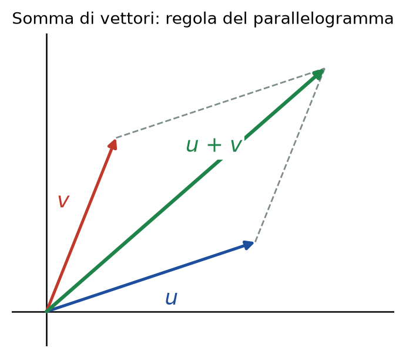
La somma di due vettori con la regola del parallelogramma.
Il prodotto per un numero (detto scalare), che ha l'effetto di allungare, accorciare o invertire il verso del vettore.
Mentre gli spazi vettoriali fungono da contenitori dei dati, le mappe lineari rappresentano il linguaggio con cui questi spazi comunicano tra loro. Una mappa lineare è una funzione tra spazi vettoriali che preserva la struttura algebrica, cioè rispetta sia la somma tra vettori che la moltiplicazione per uno scalare. Se pensiamo ai vettori come agli oggetti che trasportano l'informazione, le mappe lineari sono lo strumento matematico che ci permette di prendere tale informazione e trasformarla in qualcosa di utile.
In parole povere: una mappa lineare è una trasformazione "ben educata": se prima sommi due vettori e poi li trasformi, ottieni lo stesso risultato che trasformandoli separatamente e sommando dopo; lo stesso vale se allunghi un vettore di un fattore qualsiasi. Ruotare o ingrandire un'immagine sono esempi tipici.
Motivazioni ed Esempi Applicativi in Informatica
Sebbene queste definizioni possano sembrare molto astratte, l'algebra lineare è fondamentale in informatica. In qualsiasi programma software, infatti, i dati in ingresso (input) e i risultati prodotti (output) vengono memorizzati e trasmessi come sequenze o stringhe di numeri, comunemente note come array. Poiché gli array si comportano a tutti gli effetti come vettori, l'insieme di tutti i possibili input o output forma uno spazio vettoriale, e molte elaborazioni dei dati sono composte da mappe lineari.
La lezione illustra questo legame attraverso due esempi concreti:
Veicoli autonomi e Intelligenza Artificiale: Un'auto a guida autonoma riceve in continuazione dati dai suoi sensori e dalle telecamere. Un'immagine catturata da una telecamera è composta da una griglia di pixel, dove ciascun colore è identificato da una tripla di numeri RGB (rosso, verde, blu); allo stesso modo, la distanza da un ostacolo è un ulteriore valore numerico fornito da un sensore. Tutti questi dati insieme formano un lungo vettore di input che un algoritmo elabora per generare un vettore di output contenente i comandi di guida, come quanto accelerare, frenare o sterzare. Anche nelle reti neurali e nei modelli di IA generativa (come ChatGPT), i parametri o "pesi" appresi durante l'addestramento sono i coefficienti di mappe lineari, alternate a funzioni non lineari: l'algebra lineare è quindi una componente fondamentale di questi modelli.
Teoria dei segnali e filtraggio del rumore: Un segnale — che sia un'onda audio, una trasmissione elettromagnetica, un elettrocardiogramma (ECG) o un elettroencefalogramma (EEG) — viene descritto matematicamente come una funzione del tempo che ne misura l'ampiezza in ogni istante. Poiché le funzioni si possono sommare tra loro e moltiplicare per un numero, lo spazio dei segnali forma uno spazio vettoriale. Durante la registrazione o la trasmissione, un segnale viene spesso alterato da rumori ambientali o errori di canale. Per "ripulire" il segnale e recuperare l'informazione corretta si usa spesso un'opportuna mappa lineare.
2. Costruzione degli Insiemi Numerici e Struttura di Campo (𝕂)
La Costruzione Gerarchica degli Insiemi Numerici
Per poter definire in modo rigoroso cosa sia uno spazio vettoriale, occorre prima chiarire che cos'è un numero e da dove provengono gli oggetti che usiamo per fare i calcoli. La matematica costruisce i sistemi numerici come una catena di insiemi incapsulati l'uno nell'altro (ℕ ⊂ ℤ ⊂ ℚ ⊂ ℝ), dove ℤ nasce per poter sottrarre, ℚ per poter dividere e ℝ per colmare i "buchi" dei razionali (completezza); ℂ, come vedremo, per risolvere equazioni prive di soluzioni reali.
Numeri Naturali (ℕ = {0, 1, 2, …}): Rappresentano il punto di partenza. La loro definizione teorica formale è complessa (richiede la teoria degli insiemi e le classi di equivalenza), quindi nel corso vengono assunti come concetto primario e intuitivo.
Numeri Interi (ℤ = {…, -2, -1, 0, 1, 2, …}): Nascono unendo ai naturali i loro opposti negativi. Questo estende il sistema permettendo di definire compiutamente la sottrazione.
Numeri Razionali (ℚ = {a/b | a, b ∈ ℤ, b ≠ 0}): Vengono costruiti introducendo i rapporti (frazioni) tra interi. Questo passaggio permette di definire la divisione (ovvero la moltiplicazione per l'inverso).
Il limite dei Razionali e la nascita dei Reali (ℝ)
Rappresentando i numeri razionali su una retta, verrebbe da pensare che essi riempiano tutti i punti disponibili. Tuttavia, secondo la tradizione, già nell'antica Grecia un membro della scuola pitagorica si accorse che la diagonale di un quadrato di lato 1, lunga √2, non è commensurabile con il lato. Come dimostrato formalmente per assurdo, √2 non può essere espresso come rapporto tra due interi: esistono quindi dei "buchi" sulla retta numerica che i razionali non riescono a coprire.
Per "tappare" tutti questi buchi e completare la retta si costruisce l'insieme dei Numeri Reali (ℝ). Formalmente, un numero reale viene definito attraverso classi di equivalenza di successioni di Cauchy di numeri razionali.
In parole povere: un numero reale è un punto della retta che si può avvicinare quanto vuoi con frazioni sempre più precise. Un numero come π è il "punto di arrivo" di una sequenza di approssimazioni razionali (3; 3,1; 3,14; 3,141...) che si stringono sempre di più, anche se nessuna frazione lo raggiunge davvero.
Al di là del rigore formale, la lezione sottolinea come un numero reale (specialmente se irrazionale, come π o e) debba essere inteso operativamente non come un oggetto "finito e statico", ma come un processo dinamico in divenire: una successione di approssimazioni razionali via via più precise.
Questo approccio operativo è indispensabile per il calcolo informatico e matematico; basti pensare al calcolo di una potenza ad esponente reale come 2π: non potendo moltiplicare 2 per se stesso π volte, si calcola la sequenza delle potenze con esponenti razionali che approssimano π (23.1, 23.14, 23.141, …), avvicinandosi arbitrariamente al valore desiderato.
Le 9 Proprietà dell'Aritmetica e la Definizione di Campo (𝕂)
Sull'insieme dei numeri reali ℝ sono definite due operazioni fondamentali, la somma e la moltiplicazione, che soddisfano 9 proprietà algebriche fondamentali:
Proprietà della Somma:
Commutativa: a + b = b + a.
Associativa: (a + b) + c = a + (b + c).
Elemento neutro: Esiste lo 0 tale che a + 0 = a.
Esistenza dell'opposto: Per ogni a esiste -a tale che a + (-a) = 0.
Proprietà del Prodotto:
Commutativa: a · b = b · a.
Associativa: (a · b) · c = a · (b · c).
Elemento neutro: Esiste l'1 tale che a · 1 = a.
Esistenza dell'inverso: Per ogni a ≠ 0 esiste a−1 (o 1/a) tale che a · a−1 = 1.
Proprietà distributiva (lega somma e prodotto):
Proprietà distributiva del prodotto rispetto alla somma: a · (b + c) = a · b + a · c.
La struttura algebrica di Campo (Field)
In matematica, un qualsiasi insieme dotato di due operazioni che soddisfano tutte e 9 queste proprietà prende il nome formale di Campo (spesso indicato con il simbolo generico 𝕂).
In parole povere: un campo è un insieme di numeri dentro cui puoi fare le quattro operazioni (somma, sottrazione, prodotto, divisione per numeri diversi da zero) con le solite regole, senza mai uscire dall'insieme. I razionali e i reali sono campi; gli interi no, perché dividendo 1 per 2 esci dagli interi.
Analizzando i vari insiemi numerici alla luce di questa definizione:
ℕ NON è un campo: mancano sia gli opposti sia gli inversi.
ℤ NON è un campo: possiede gli opposti ma mancano gli inversi (ad esempio 2 ∈ ℤ, ma il suo inverso 1/2 ∉ ℤ).
ℚ e ℝ SONO campi: soddisfano interamente tutte e 9 le proprietà. (In seguito si vedrà che anche l'insieme dei numeri complessi ℂ costituisce un campo).
Ruolo del Campo nell'Algebra Lineare
La nozione di campo è cruciale per il prosieguo del corso: quando definiremo formalmente gli spazi vettoriali, stabiliremo che i vettori si possono moltiplicare per dei numeri presi da un opportuno campo 𝕂. Gli elementi del campo prendono il nome di scalari. Nel corso dell'anno, il campo degli scalari di riferimento sarà generalmente ℝ oppure ℂ (la definizione vale però per qualsiasi campo).
3. Introduzione ai Numeri Complessi e Definizione Algebrica
Motivazione Teorica e l'Estensione dei Reali
Nel percorso di costruzione dei sistemi numerici (ℕ ⊂ ℤ ⊂ ℚ ⊂ ℝ ⊂ ℂ), ogni ampliamento nasce da un'esigenza precisa: sottrarre (ℤ), dividere (ℚ), colmare i "buchi" dei razionali (ℝ), risolvere equazioni prive di soluzioni reali (ℂ). Così come l'introduzione dei numeri reali ℝ ha consentito di risolvere equazioni come x2 = 2 (impossibili da completare in ℚ), l'estensione ai numeri complessi ℂ risponde alla necessità di risolvere equazioni algebriche prive di soluzioni reali, la cui forma più elementare è:
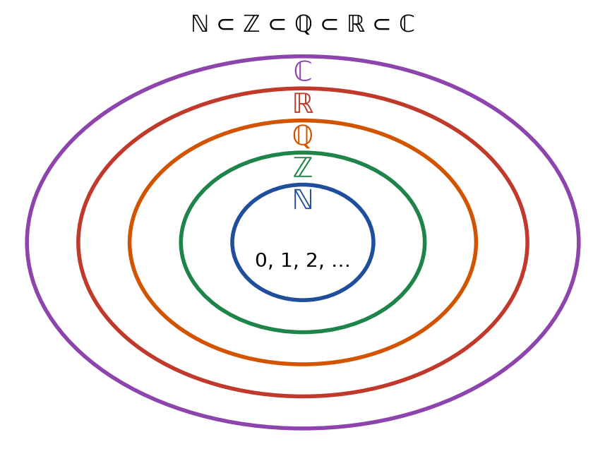
Gli insiemi numerici come scatole una dentro l'altra.
x2 + 1 = 0 ⟺ x2 = -1
Nell'insieme dei numeri reali, il quadrato di qualsiasi numero non nullo è sempre strettamente positivo (x2 > 0), il che rende impossibile estrarre la radice quadrata di un numero negativo. Introducendo l'insieme ℂ, la matematica costruisce un sistema numerico con proprietà algebriche superiori. Come evidenziato a lezione, sebbene l'unità immaginaria possa sembrare un concetto astratto, i numeri complessi costituiscono uno strumento indispensabile come passaggio intermedio in ambiti come la fisica e l'ingegneria, permettendo di risolvere problemi il cui risultato finale torna poi a essere una grandezza reale e misurabile.
La Forma Algebrica e l'Unità Immaginaria
Un numero complesso z ∈ ℂ viene definito come un oggetto algebrico espresso in forma cartesiana (o algebrica):
z = a + bi
I componenti di questa espressione sono definiti come segue:
a e b sono due numeri reali arbitrari (a, b ∈ ℝ), chiamati rispettivamente parte reale (a = Re(z)) e parte immaginaria (b = Im(z)): la parte immaginaria è il numero reale b, non bi.
i è il simbolo speciale denominato unità immaginaria, caratterizzato dalla regola fondamentale:
i2 = -1 i4 =1
In parole povere: un numero complesso è una coppia di numeri reali scritta in modo speciale: una parte "normale" (a) e una parte che moltiplica i, una radice quadrata inventata di -1 (b). È come un punto del piano con due coordinate, dove la seconda è la parte immaginaria. Esempio: 3 + 2i ha parte reale 3 e parte immaginaria 2 (non 2i).
I numeri reali costituiscono un sottoinsieme proprio dei numeri complessi (ℝ ⊂ ℂ): quando la componente b = 0, il numero z = a + 0i coincide con il comune numero reale a. Quando invece a = 0 e b ≠ 0, il numero z = bi prende il nome di immaginario puro.
In parole povere: i reali sono i numeri complessi "senza parte immaginaria" (stanno sull'asse orizzontale), mentre gli immaginari puri sono quelli "senza parte reale", come 5i, che stanno sull'asse verticale.
Operazioni Algebriche Fondamentali
L'algebra dei numeri complessi segue le classiche regole operative dell'aritmetica reale, applicando l'unica avvertenza di sostituire ogni occorrenza di i2 con il valore -1.
Somma: L'addizione tra due numeri complessi z1 = a + bi e z2 = c + di si effettua sommando separatamente le parti reali e le parti immaginarie:
(a + bi) + (c + di) = (a + c) + (b + d)i
Prodotto: La moltiplicazione si calcola sviluppando il prodotto delle due parentesi tramite la normale proprietà distributiva e applicando la relazione i2 = -1:
(a + bi) · (c + di) = ac + adi + bci + bdi2 = (ac - bd) + (ad + bc)i
4. Proprietà Algebriche e Struttura di Campo (ℂ)
Le 9 Proprietà dell'Aritmetica e la Struttura di Campo
Come già osservato per i numeri reali ℝ, anche sull'insieme dei numeri complessi ℂ sono definite le due operazioni binarie fondamentali — la somma e la moltiplicazione — che soddisfano rigorosamente le stesse 9 proprietà algebriche dell'aritmetica:
Proprietà della Somma:
Commutativa: z1 + z2 = z2 + z1 per ogni z1, z2 ∈ ℂ.
Associativa: (z1 + z2) + z3 = z1 + (z2 + z3) per ogni z1, z2, z3 ∈ ℂ.
Elemento neutro: Esiste l'elemento neutro 0 ∈ ℂ (espresso come 0 + 0i) tale che z + 0 = z.
Esistenza dell'opposto: Per ogni z = a + bi ∈ ℂ, esiste l'opposto -z = -a - bi tale che z + (-z) = 0.
Proprietà del Prodotto:
Commutativa: z1 · z2 = z2 · z1 per ogni z1, z2 ∈ ℂ.
Associativa: (z1 · z2) · z3 = z1 · (z2 · z3) per ogni z1, z2, z3 ∈ ℂ.
Elemento neutro: Esiste l'unità 1 ∈ ℂ (espressa come 1 + 0i) tale che z · 1 = z.
Esistenza dell'inverso: Per ogni numero complesso non nullo z ≠ 0, esiste un inverso moltiplicativo z−1 tale che z · z−1 = 1.
Proprietà Distributiva:
Il prodotto si distribuisce rispetto alla somma: z1 · (z2 + z3) = z1 · z2 + z1 · z3.
Soddisfando tutti e 9 gli assiomi dell'aritmetica, l'insieme dei numeri complessi costituisce formalmente un Campo (indicato genericamente con il simbolo 𝕂). Di conseguenza, ℂ condivide la medesima dignità algebrica di ℝ e ℚ, e costituisce una struttura fondamentale da cui estrarre gli scalari per la definizione degli spazi vettoriali.
La Mancanza di Ordinamento in ℂ
Nonostante ℂ sia un campo algebrico completo, la lezione pone l'accento su una differenza fondamentale rispetto agli insiemi numerici precedentemente studiati (ℕ, ℤ, ℚ e ℝ): l'insieme dei numeri complessi non è un insieme ordinato.
Nei numeri reali è sempre possibile confrontare due elementi distinti stabilendo quale sia maggiore o minore dell'altro (a > b oppure b > a) e distinguere chiaramente i numeri positivi da quelli negativi. In ℂ, al contrario, non esiste alcuna relazione d'ordine che sia compatibile con le operazioni algebriche di somma e prodotto.
La motivazione teorica di questo limite deriva direttamente dalla definizione dell'unità immaginaria:
In un qualsiasi campo ordinato, il quadrato di un elemento non nullo deve risultare strettamente positivo.
Nei numeri complessi, tuttavia, la regola cardine stabilisce che i2 = -1. Se si tentasse di definire un ordine, si arriverebbe alla contraddizione per cui -1 dovrebbe essere considerato un numero positivo.
Per questo motivo, non ha alcun significato matematico scrivere espressioni come z1 > z2 o chiedere se un numero complesso sia "positivo" o "negativo". I numeri complessi come tali si possono solo confrontare per uguaglianza (z1 = z2) o diversità (z1 ≠ z2). Si possono invece ordinare grandezze reali associate, come i moduli (|z1| < |z2|) o le parti reali (Re(z1) < Re(z2)).
5. I Tre Concetti Chiave: Coniugato, Modulo e Inverso Moltiplicativo
Il Coniugato di un Numero Complesso (z̄)
Dato un numero complesso z = a + bi, si definisce coniugato (o coniugio) di z, indicato convenzionalmente con il simbolo z̄, il numero complesso ottenuto invertendo il segno della sola parte immaginaria:
z̄ = a - bi
Il coniugio lascia inalterata la parte reale e cambia il segno della parte immaginaria (Re(z̄) = Re(z) e Im(z̄) = -Im(z)). Se si applica l'operazione due volte di fila, si torna al numero di partenza (z̿ = z).
In parole povere: il coniugato è lo "specchio" di un numero complesso rispetto all'asse orizzontale: tieni la parte reale e cambi solo il segno di quella immaginaria. Il coniugato di 2 + 3i è 2 - 3i; specchiandolo due volte torni dov'eri.
Questa operazione permette di caratterizzare in modo elegante i numeri reali all'interno dell'insieme dei complessi:
Se z ∈ ℝ, la sua parte immaginaria è nulla (Im(z) = 0), da cui segue che z = z̄.
Sui numeri reali l'operazione di coniugio non produce alcun effetto; nei numeri complessi rappresenta invece una trasformazione fondamentale.
Il Modulo o Valore Assoluto (|z|)
Il modulo (o valore assoluto) di un numero complesso z = a + bi viene definito come la radice quadrata della somma dei quadrati della parte reale e della parte immaginaria:
|z| = √(a2 + b2)
Poiché a e b sono numeri reali, i loro quadrati a2 e b2 sono quantità non negative; di conseguenza, la radice quadrata è sempre ben definita nei reali e restituisce uno scalare reale non negativo (|z| ∈ ℝ e |z| ≥ 0). Il modulo si annulla se e solo se il numero complesso è lo zero (z = 0 + 0i).
In parole povere: il modulo è la distanza del numero dall'origine, calcolata con Pitagora: la parte reale e quella immaginaria sono i due cateti e il modulo è l'ipotenusa. Per 3 + 4i il modulo è 5. È sempre un numero reale maggiore o uguale a zero ed è zero solo per il numero zero.
La Relazione Fondamentale
Moltiplicando un numero complesso z per il suo coniugato z̄, si ottiene un'identità algebrica di primaria importanza:
z · z̄ = (a + bi)(a - bi) = a2 - b2 i2 = a2 + b2 = |z|2
Il prodotto tra un numero complesso e il suo coniugato restituisce sempre un numero reale non negativo, pari al quadrato del modulo del numero stesso (z · z̄ = |z|2).
L'Inverso Moltiplicativo (z−1)
Dimostrare che l'insieme dei numeri complessi ℂ costituisce un campo richiede di garantire l'esistenza dell'inverso moltiplicativo z−1 per qualsiasi elemento non nullo z ≠ 0. Cercare un numero z−1 tale che z · z−1 = 1 in forma cartesiana potrebbe sembrare complicato; tuttavia, la relazione z · z̄ = |z|2 ne fornisce la costruzione rigorosa.
Essendo z ≠ 0, il modulo al quadrato |z|2 è un numero reale strettamente positivo; è quindi possibile dividere entrambi i membri dell'identità per |z|2:
z · ( (z̄)/(|z|2) ) = 1 ⟹ z−1 =
Esplicitando z = a + bi, la formula dell'inverso in forma cartesiana diventa:
z−1 = (a - bi)/(a2 + b2) = ( a/(a2 + b2) ) + ( (-b)/(a2 + b2) )i
Esempio Pratico
Per calcolare l'inverso del numero complesso z = 2 + 5i:
Si calcola il modulo al quadrato: |z|2 = 22 + 52 = 4 + 25 = 29.
Si scrive il coniugato: z̄ = 2 - 5i.
L'inverso risulta: z−1 = (2 - 5i)/29 = 2/29 - (5/29)i.
Moltiplicando z · z−1 = (2 + 5i) ( 2/29 - (5/29)i ), si verifica immediatamente che il risultato è 1.
6. Interpretazione Geometrica nel Piano di Argand-Gauss (ℝ2)
La Rappresentazione del Piano Complesso
Mentre i numeri reali ℝ trovano collocazione geometrica naturale lungo una retta monodimensionale, i numeri complessi ℂ necessitano di uno spazio bidimensionale. Ogni numero complesso espresso in forma cartesiana z = a + bi può essere univocamente identificato con il punto di coordinate cartesiane (a, b) nel piano ℝ2, noto come Piano di Argand-Gauss o piano complesso. In alternativa, z può essere interpretato come un vettore con applicazione nell'origine (0, 0) e punta posizionata nel punto (a, b).
Gli assi cartesiani assumono un significato algebrico specifico:
Asse delle ascisse (Asse Reale Re): ospita i numeri reali, corrispondenti ai complessi con parte immaginaria nulla (a + 0i).
Asse delle ordinate (Asse Immaginario Im): ospita i numeri della forma bi con b ∈ ℝ (immaginari puri per b ≠ 0, più l'origine).
Significato Geometrico delle Operazioni
Interpretare i numeri complessi nel piano cartesiano permette di associare ad alcune operazioni algebriche una chiara trasformazione geometrica:
Somma Vettoriale e Regola del Parallelogramma: L'addizione tra due numeri complessi z1 = (a, b) e z2 = (c, d) avviene sommando separatamente le componenti orizzontali e verticali: z1 + z2 = (a+c, b+d). Geometricamente, questa operazione coincide con la regola del parallelogramma utilizzata in fisica per la composizione delle forze e dei vettori.
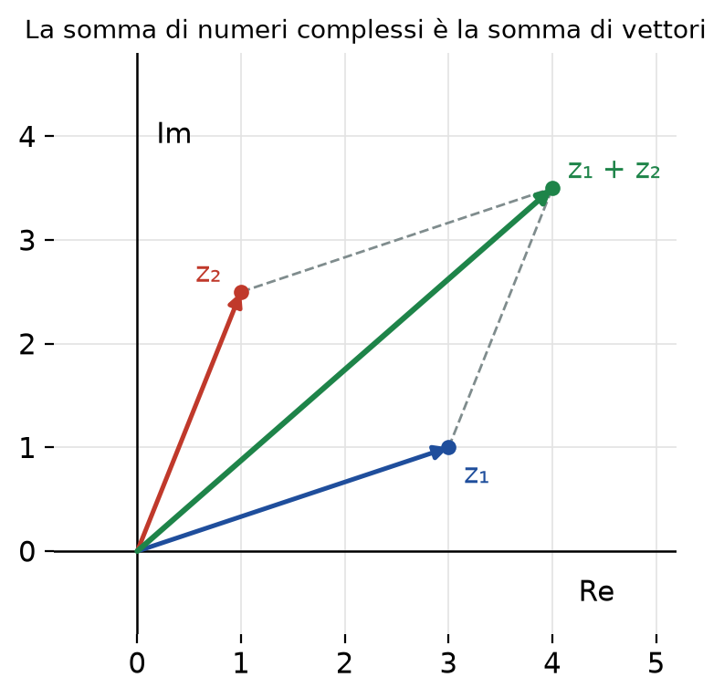
La somma di due numeri complessi nel piano di Argand-Gauss.
Riflessione del Coniugato (z̄): Il coniugato z̄ = a - bi mantiene inalterata la coordinata reale a e inverte il segno della coordinata immaginaria b. Nel piano complesso, questo corrisponde a una riflessione speculare del punto rispetto all'asse reale.
Modulo come Distanza (|z|): Il modulo |z| = √(a2 + b2) rappresenta la lunghezza euclidea del vettore, ossia la distanza geometrica del punto (a, b) dall'origine (0, 0) calcolata tramite il teorema di Pitagora.
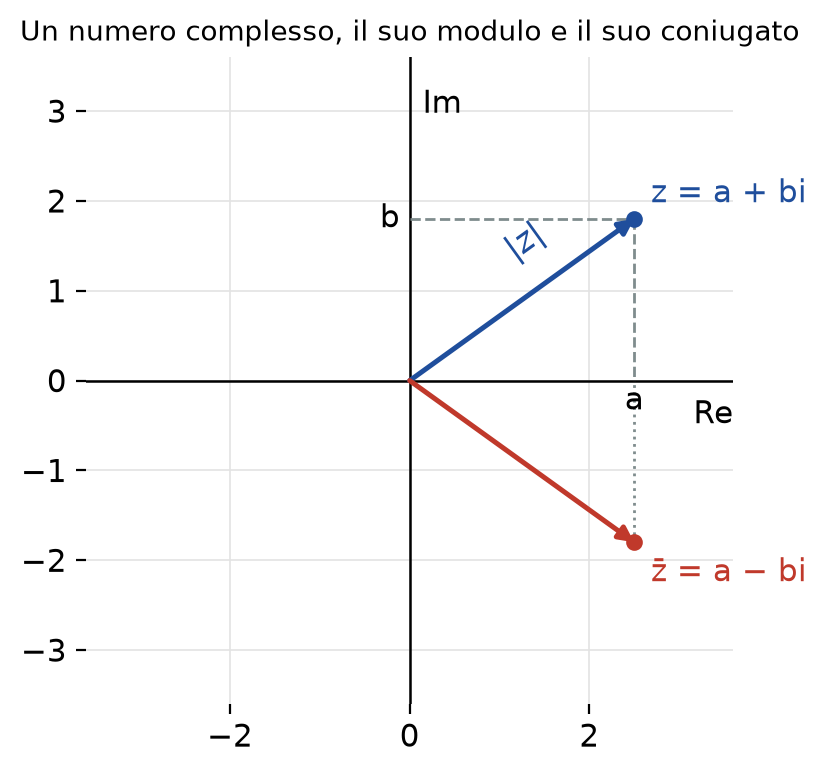
z = a + bi nel piano complesso: il modulo è la lunghezza del vettore, il coniugato è il simmetrico rispetto all'asse reale.
Il Limite della Rappresentazione Cartesiana e l'Introduzione alle Coordinate Polari
Se la somma complessa possiede un'immediata interpretazione geometrica tramite i vettori, la moltiplicazione algebrica:
(a, b) · (c, d) = (ac - bd, ad + bc)
produce un nuovo vettore il cui legame geometrico con i due fattori di partenza risulta oscuro e poco intuitivo se analizzato unicamente tramite le coordinate cartesiane.
Come sottolineato a lezione, per comprendere appieno il significato geometrico del prodotto occorre abbandonare la griglia cartesiana (x, y) in favore delle coordinate polari (r, θ), definite dalla distanza dall'origine (il modulo r = |z|) e dall'angolo di inclinazione rispetto all'asse reale (l'argomento θ). In questa nuova rappresentazione, la moltiplicazione rivela la sua vera natura: i moduli si moltiplicano e gli angoli si sommano.
7. Coordinate Polari e Forma Esponenziale dei Numeri Complessi
Dalle coordinate cartesiane alle coordinate polari
Nel capitolo precedente abbiamo identificato ogni numero complesso z = a + bi con il punto P = (a, b) del piano di Argand-Gauss. Per un punto diverso dall'origine O esiste però un secondo modo, del tutto equivalente, di indicarne la posizione: invece di dire "di quanto ci si sposta in orizzontale e in verticale", si dice a che distanza dall'origine si trova il punto e in quale direzione. Si ottengono così le coordinate polari (r, θ), definite da:
r è la lunghezza del segmento OP, cioè la distanza di P dall'origine O;
θ (la lettera greca theta) è l'angolo, misurato in radianti, che il segmento OP forma con il semiasse positivo delle ascisse, contando le rotazioni in senso antiorario.
In parole povere: invece di dire "vai a destra di a e in alto di b", si dice "cammina per una distanza r in una direzione ruotata di un angolo θ rispetto all'asse orizzontale". È come indicare un luogo con distanza e direzione (come una bussola) invece che con le coordinate della griglia.
Il legame con le coordinate cartesiane passa per le funzioni seno e coseno, che si interpretano sulla circonferenza di raggio 1: se un punto sulla circonferenza forma un angolo θ con il semiasse positivo delle x, il suo coseno è l'ascissa e il suo seno è l'ordinata. Un punto a distanza r dall'origine ha quindi coordinate r volte più grandi:
dalle polari alle cartesiane: a = r cos θ, b = r sen θ;
dalle cartesiane alle polari: r = √(a2 + b2), cos θ = a / r, sen θ = b / r.
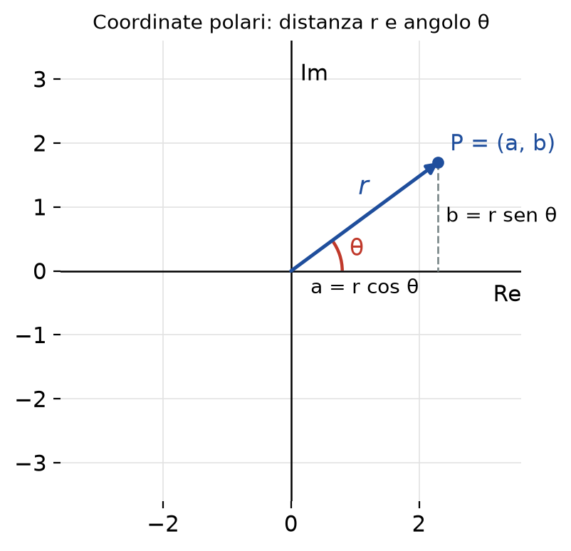
Coordinate polari di un punto: distanza r dall'origine e angolo θ.
Modulo e argomento
Applicando queste formule a un numero complesso z = a + bi ≠ 0 lo si può scrivere in coordinate polari come:
z = r (cos θ + i sen θ)
Il numero r = |z| è il modulo di z, già incontrato come distanza dall'origine (e per z = 0 vale |z| = 0). L'angolo θ si chiama argomento (o fase) di z e si indica con Arg(z). Due precisazioni importanti:
l'argomento non è unico: aggiungendo o togliendo un giro completo si torna nello stesso punto, quindi θ è definito a meno di multipli di 2π. Per fissare una scelta si prende di solito θ ∈ [0, 2π), oppure θ ∈ (−π, π]: l'importante è dichiarare quale convenzione si usa;
per z = 0 l'argomento non è definito, perché l'origine non ha una direzione: ogni angolo va bene.
In parole povere: l'argomento di un numero complesso è l'angolo della direzione in cui sta, misurato in senso antiorario a partire dall'asse orizzontale positivo. Siccome un giro completo riporta nello stesso punto, l'angolo è ambiguo di giri interi (come le 25 sulle lancette sono le 1): per questo si fissa un intervallo. Per lo zero non c'è nessuna direzione, quindi l'argomento non esiste.
Trabocchetto d'Esame: ricavare θ da a e b. Non basta calcolare arctan(b/a). Questa funzione restituisce solo angoli tra −π/2 e π/2, quindi bisogna distinguere i casi (qui con la convenzione θ ∈ [0, 2π)):
se a > 0 e b ≥ 0 (primo quadrante e semiasse reale positivo): θ = arctan(b/a);
se a > 0 e b < 0 (quarto quadrante): θ = arctan(b/a) + 2π, perché arctan(b/a) è negativo;
se a < 0 (secondo e terzo quadrante): θ = arctan(b/a) + π;
se a = 0 il rapporto b/a non esiste: θ = π/2 per b > 0 e θ = 3π/2 per b < 0.
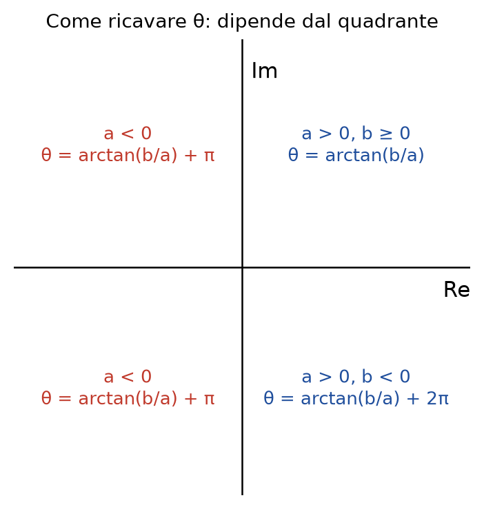
Quale formula usare per θ a seconda del quadrante.
In caso di dubbio conviene sempre controllare con un disegno in quale quadrante si trova il punto. Per esempio, per z = −1 + i si ha r = √2 e arctan(1/(−1)) = −π/4; poiché a < 0 si aggiunge π e si ottiene θ = 3π/4, coerente con il fatto che il punto sta nel secondo quadrante.
La notazione esponenziale
La scrittura in coordinate polari si può rendere molto più compatta introducendo la notazione:
eiθ = cos θ + i sen θ
Con questa scelta ogni numero complesso z ≠ 0 diventa:
z = r eiθ
che si chiama rappresentazione polare (o esponenziale) di z. Il motivo profondo per cui compare proprio il numero e riguarda lo sviluppo in serie di potenze delle funzioni ex, sen x e cos x, e va oltre gli obiettivi del corso: per il momento basta considerare eiθ come un simbolo che significa cos θ + i sen θ. È un simbolo ben scelto, perché si comporta come un vero esponenziale (lo dimostriamo nel prossimo capitolo).
In parole povere: la forma esponenziale è solo una scrittura abbreviata per "distanza r, angolo θ". Il simbolo e^(iθ) vuol dire semplicemente cos θ + i sen θ, cioè il punto sulla circonferenza di raggio 1 a quell'angolo; moltiplicandolo per r lo si porta alla distanza giusta.
I numeri eiθ, al variare di θ, sono esattamente i punti della circonferenza unitaria, cioè quelli con modulo 1. Due valori particolari sono molto noti:
per θ = π si ottiene eiπ = cos π + i sen π = −1, da cui la celebre identità di Eulero eiπ + 1 = 0;
per θ = 2π si ottiene e2πi = 1: dopo un giro completo si torna al punto di partenza.
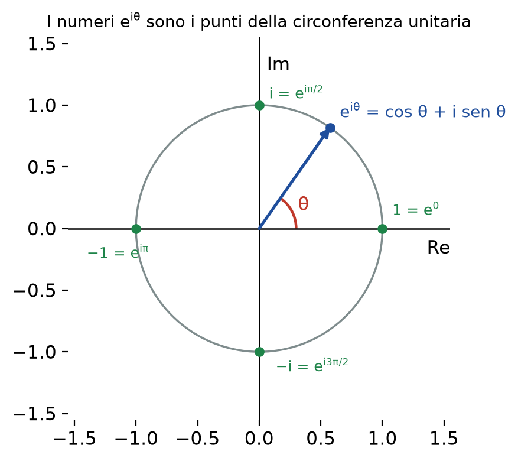
I punti della circonferenza unitaria sono i numeri cos θ + i sen θ.
Due esempi
Dalla forma cartesiana a quella polare. Vogliamo scrivere z = −5 in forma polare. Il punto sta sul semiasse reale negativo, a distanza 5 dall'origine, quindi r = 5, e l'angolo formato con il semiasse positivo è mezzo giro, θ = π. Dunque −5 = 5 eiπ.
Dalla forma polare a quella cartesiana. Dato z = 2 eiπ/4, si ha:
z = 2 (cos(π/4) + i sen(π/4)) = 2 (√2/2 + i √2/2) = √2 + i √2
Quando due forme polari rappresentano lo stesso numero
Poiché l'argomento è definito solo a meno di giri completi, due scritture r1 eiθ1 e r2 eiθ2 rappresentano lo stesso numero complesso se e solo se valgono entrambe le condizioni:
r1 = r2, cioè hanno lo stesso modulo;
θ2 = θ1 + 2kπ per qualche k ∈ ℤ, cioè gli angoli differiscono per un multiplo di 2π.
È un dettaglio facile da trascurare, ma sarà indispensabile quando risolveremo le equazioni con le radici n-esime: due coppie (r, θ) diverse possono indicare lo stesso punto, e l'equazione va trattata tenendo conto di tutte. Nel prossimo capitolo vedremo però il vantaggio principale della rappresentazione polare: rende molto semplice il prodotto di due numeri complessi.
8. Prodotto, Inverso e Coniugio in Forma Polare
L'esponenziale complesso si comporta come un esponenziale
Alla fine del capitolo 6 avevamo osservato che il prodotto in coordinate cartesiane, (a, b) · (c, d) = (ac − bd, ad + bc), produce un risultato il cui legame geometrico con i due fattori resta oscuro. Con la rappresentazione polare il quadro cambia completamente. Il punto di partenza è la proprietà che giustifica la scelta della notazione eiθ.
Proposizione. Per ogni coppia di angoli θ1 e θ2 vale ei(θ1 + θ2) = eiθ1 · eiθ2.
Dimostrazione. Si sviluppa il prodotto applicando la definizione di eiθ e la proprietà distributiva, ricordando che i2 = −1:
1. eiθ1 · eiθ2 = (cos θ1 + i sen θ1) (cos θ2 + i sen θ2), per definizione di eiθ;
2. = (cos θ1 cos θ2 − sen θ1 sen θ2) + i (cos θ1 sen θ2 + sen θ1 cos θ2), sviluppando il prodotto e usando i2 = −1;
3. = cos(θ1 + θ2) + i sen(θ1 + θ2), perché le due parentesi sono proprio le formule di addizione di coseno e seno;
4. = ei(θ1 + θ2), di nuovo per definizione. ∎
Il prodotto: i moduli si moltiplicano, gli angoli si sommano
Siano z1 = r1 eiθ1 e z2 = r2 eiθ2. Grazie alla proposizione precedente il prodotto si calcola in una riga:
z1 z2 = r1 eiθ1 · r2 eiθ2 = (r1 r2) ei(θ1 + θ2)
Leggendo modulo e argomento del risultato si ottengono due regole molto comode:
|z1 z2| = r1 r2 = |z1| · |z2|, cioè il modulo del prodotto è il prodotto dei moduli;
Arg(z1 z2) = θ1 + θ2 = Arg(z1) + Arg(z2), cioè l'argomento del prodotto è la somma degli argomenti (sempre a meno di multipli di 2π).
Significato geometrico. Moltiplicare z1 per z2 equivale a ruotare z1 dell'angolo θ2 e a riscalarne la lunghezza del fattore r2. È la spiegazione geometrica che cercavamo: la moltiplicazione complessa è una rotazione combinata con un ingrandimento (o una riduzione).
Esempio. Calcoliamo (1 + i) · (1 + i). Il numero 1 + i ha modulo √2 e argomento π/4, quindi 1 + i = √2 eiπ/4. Elevando al quadrato:
(1 + i)2 = (√2)2 eiπ/2 = 2 eiπ/2 = 2i
Si può controllare con le coordinate cartesiane: (1 + i)2 = 1 + 2i + i2 = 2i.
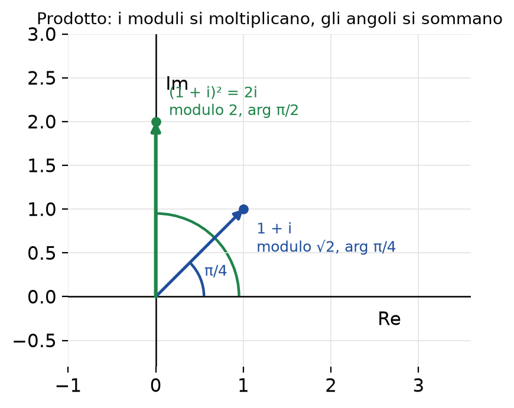
(1 + i)² = 2i: il modulo passa da √2 a 2, l'argomento da π/4 a π/2.
Coniugio e inverso
Per scrivere il coniugato in forma polare partiamo da z = a + bi = r eiθ. Il coniugato z̄ = a − bi ha la stessa parte reale e parte immaginaria opposta: il punto viene riflesso rispetto all'asse reale, quindi mantiene il modulo e cambia segno all'angolo. Lo si verifica direttamente, perché cos(−θ) = cos θ e sen(−θ) = −sen θ:
z̄ = r e−iθ = r cos θ − i r sen θ = a − bi
Nel capitolo 5 avevamo ricavato l'inverso di un numero z ≠ 0 come z-1 = z̄ / |z|2. In forma polare il calcolo è immediato:
z-1 = z̄ / |z|2 = r e−iθ / r2 = (1/r) e−iθ
In parole: l'inverso ha modulo inverso (1/r) e argomento opposto (−θ). Come verifica, il prodotto z · z-1 = r · (1/r) · ei(θ − θ) = ei·0 = cos 0 + i sen 0 = 1.
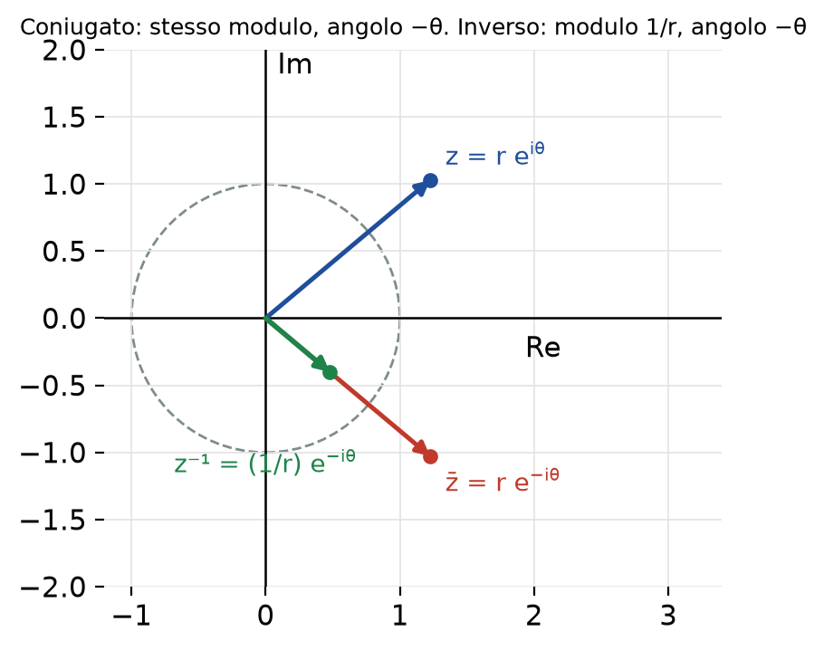
Coniugato e inverso in forma polare.
Combinando prodotto e inverso si ottiene anche la regola per la divisione, valida per z2 ≠ 0: z1 / z2 = z1 · z2-1 = (r1 / r2) ei(θ1 − θ2), cioè si dividono i moduli e si sottraggono gli argomenti.
Resta da vedere cosa succede quando lo stesso numero viene moltiplicato per se stesso più volte: è il tema del prossimo capitolo, che porterà alle potenze e alle radici n-esime.
9. Potenze e Radici n-esime di un Numero Complesso
Le potenze in forma polare
Il prodotto in forma polare rende banale il calcolo delle potenze. Se z = r eiθ e n ≥ 1 è un numero naturale, elevare z alla n significa moltiplicare r per se stesso n volte (si ottiene rn) e sommare θ a se stesso n volte (si ottiene nθ):
zn = (r eiθ)n = rn einθ = rn (cos nθ + i sen nθ)
Questa è la formula di De Moivre (nei testi classici il nome indica il caso r = 1, ma la struttura è la stessa). Ne seguono due regole:
|zn| = |z|n, cioè il modulo si eleva alla n;
Arg(zn) = n · Arg(z), cioè l'argomento si moltiplica per n (come sempre, a meno di multipli di 2π).
Esempio. Calcoliamo (1 + i)2000, che in forma cartesiana sarebbe impraticabile. Poiché 1 + i = √2 eiπ/4:
(1 + i)2000 = (√2)2000 ei · 2000π/4 = 21000 ei · 500π
Ora 500π = 250 · 2π è un multiplo intero di 2π, quindi ei · 500π = 1 e il risultato è (1 + i)2000 = 21000.
Le radici n-esime: il problema
Dato z0 ∈ ℂ, diciamo che w ∈ ℂ è una radice n-esima di z0 se wn = z0. Vedremo che, per z0 ≠ 0, le radici n-esime sono esattamente n, tutte distinte. (Per z0 = 0 l'unica radice è w = 0.)
In parole povere: la radice n-esima di un numero è un numero che, elevato alla n, restituisce quello di partenza. Come per i reali, dove 4 ha due radici quadrate (2 e -2), qui ogni numero non nullo ha n radici n-esime, tutte diverse tra loro.
Come si trovano
Sia z0 = r0 eiθ0 ≠ 0 e cerchiamo w = r eiθ tale che wn = z0. Per la formula delle potenze l'equazione diventa:
rn einθ = r0 eiθ0
Per quanto visto nel capitolo 7, due forme polari rappresentano lo stesso numero se e solo se hanno lo stesso modulo e angoli che differiscono per un multiplo di 2π. Si ottengono quindi due condizioni:
sul modulo, rn = r0, da cui r = ⁿ√r0, dove con il simbolo ⁿ√r0 si intende la radice reale positiva del numero reale positivo r0;
sull'angolo, nθ = θ0 + 2kπ per qualche k ∈ ℤ, da cui θ = θ0/n + 2kπ/n.
Al variare di k gli angoli crescono ogni volta di 2π/n. Le soluzioni distinte sono esattamente quelle con k = 0, 1, …, n − 1, per due motivi:
due indici diversi j ≠ k in {0, …, n − 1} danno angoli che differiscono di 2π(j − k)/n, e poiché 0 < |j − k| < n questa differenza non è un multiplo intero di 2π: i numeri ottenuti sono diversi;
ogni altro intero k si scrive come k = qn + s con 0 ≤ s < n, e l'angolo corrispondente è quello di s più q giri completi: si ritrova quindi la radice con indice s.
Le radici sono dunque le n soluzioni:
wk = ⁿ√r0 · ei(θ0/n + 2kπ/n), per k = 0, 1, …, n − 1
Interpretazione geometrica. Le n radici hanno tutte lo stesso modulo ⁿ√r0, quindi stanno su una circonferenza centrata nell'origine, e i loro angoli sono equidistanziati di 2π/n. Sono quindi i vertici di un poligono regolare con n lati.
Esempi
Radici terze di 8. Qui z0 = 8 = 8 ei·0, quindi r0 = 8, θ0 = 0 e n = 3. Il modulo delle radici è ³√8 = 2 e gli angoli sono 2kπ/3:
k = 0: w0 = 2 ei·0 = 2;
k = 1: w1 = 2 ei2π/3 = 2 (−1/2 + i √3/2) = −1 + i√3;
k = 2: w2 = 2 ei4π/3 = 2 (−1/2 − i √3/2) = −1 − i√3.
Sul piano complesso sono i vertici di un triangolo equilatero inscritto nella circonferenza di raggio 2, con un vertice nel punto (2, 0).
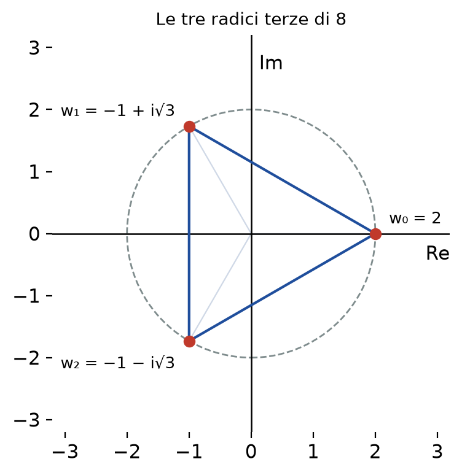
Le radici terze di 8 sono i vertici di un triangolo equilatero di raggio 2.
Soluzioni di z3 = −8. Si ha −8 = 8 eiπ, quindi r0 = 8, θ0 = π e n = 3. Il modulo delle radici è ³√8 = 2 e gli angoli sono π/3 + 2kπ/3, cioè π/3, π e 5π/3. Le tre soluzioni sono:
2 eiπ/3 = 2 (1/2 + i √3/2) = 1 + i√3;
2 eiπ = −2;
2 ei5π/3 = 2 (1/2 − i √3/2) = 1 − i√3.
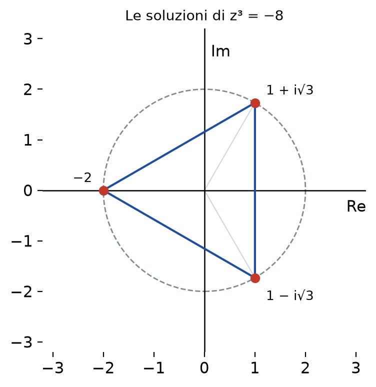
Le soluzioni di z³ = −8: stesso triangolo, ruotato di π/3.
Radici n-esime dell'unità. L'equazione zn = 1 ha come soluzioni zk = ei·2kπ/n per k = 0, 1, …, n − 1: sono i vertici di un poligono regolare di raggio 1 con n lati, che ha 1 come vertice.
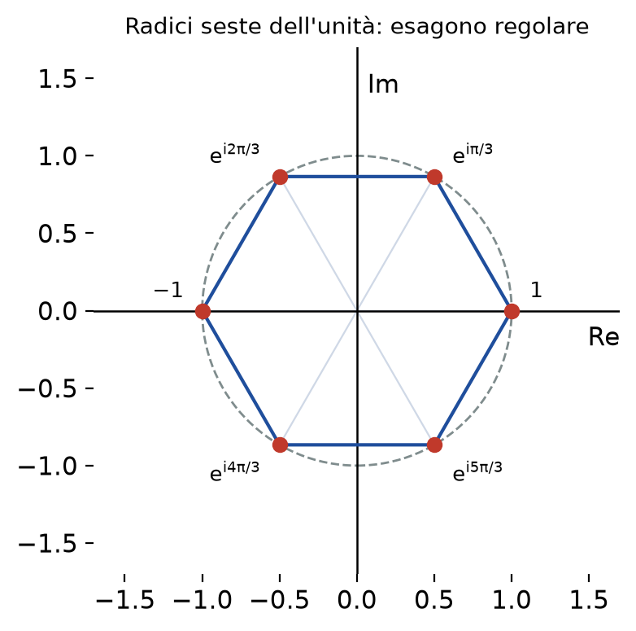
Le radici seste dell'unità formano un esagono regolare.
Trabocchetti d'Esame
In ℂ la scrittura "radice n-esima di z" non indica un numero solo, ma l'insieme delle n soluzioni dell'equazione wn = z. Quando si risolve un'equazione di questo tipo bisogna sempre elencarle tutte.
Non si può calcolare la radice di un numero complesso "per componenti": in generale ⁿ√(a + bi) è diverso da ⁿ√a + i ⁿ√b. Si passa sempre dalla forma polare.
Ricavando θ da a e b, attenzione al quadrante: quando a < 0 il solo arctan(b/a) dà l'angolo sbagliato (si veda il capitolo 7).
Le radici e le potenze che abbiamo imparato a calcolare torneranno utili nel prossimo argomento del corso, i polinomi, dove si vedrà quante soluzioni può avere un'equazione algebrica nel campo dei numeri complessi.
10. Polinomi: Monomi, Grado e Insiemi di Polinomi
I monomi
I polinomi sono tipi particolarmente semplici di funzioni, ottenute combinando numeri e variabili con le sole operazioni di somma, differenza e prodotto. Si parte dai monomi: un monomio è un'espressione algebrica con una parte numerica (il coefficiente) e una parte letterale (le variabili), in cui sulle variabili si usano solo le operazioni di somma, sottrazione e moltiplicazione (le potenze con esponente naturale sono moltiplicazioni ripetute). Esempi di monomi sono 4x, −2xy² e √5·x⁴. L'esponente 4 in x⁴ è soltanto una notazione per x·x·x·x, quindi si usa ancora solo la moltiplicazione.
Non sono invece monomi sin(x), x/y e √x, perché sulle variabili compaiono operazioni diverse da somma, sottrazione e moltiplicazione. Come ha sottolineato il docente, la radice in √5·x⁴ non è un problema: √5 è semplicemente un numero (un 2,23… scritto in modo poco comodo) e fa parte del coefficiente, mentre una radice sulla parte letterale, come in √x, non va bene.
In parole povere: un monomio è un "mattoncino" fatto da un numero moltiplicato per lettere elevate a potenze intere, come 4x o -2xy². Si può fare solo somma, sottrazione e prodotto sulle lettere: niente seni, niente divisioni per una lettera, niente radici di una lettera.
Il grado
Il grado di un monomio è la somma degli esponenti delle sue variabili. L'esponente 1 non si scrive, quindi:
4x ha grado 1;
−2xy² ha grado 1 + 2 = 3;
√5·x⁴ ha grado 4.
Un monomio di grado zero è semplicemente un numero.
In parole povere: il grado di un monomio si ottiene contando quante lettere vengono moltiplicate tra loro in totale (sommando le potenze). In 3x²y ci sono x, x e y, quindi il grado è 3.
I polinomi
Un polinomio è una somma di monomi, e il suo grado è il massimo dei gradi dei suoi monomi. Per esempio 4x − 2xy² + √5·x⁴ ha monomi di grado 1, 3 e 4, quindi è un polinomio di grado 4. Un polinomio può avere un numero qualsiasi di variabili (anche 113), ma in questo corso interessano soprattutto i polinomi in una sola variabile, che indichiamo con x e scriviamo p(x), o più semplicemente p.
In parole povere: un polinomio è una somma di mattoncini (monomi), e il suo grado è quello del mattoncino "più alto". Per esempio x³ - 2x + 5 è fatto da pezzi di grado 3, 1 e 0, quindi ha grado 3.
Polinomi in una variabile
Se compare solo la variabile x, in ogni monomio c'è x con qualche esponente (oppure nessuna x). Si possono quindi riunire i monomi con la stessa potenza di x e ordinarli dalla potenza più alta alla più bassa:
p(x) = anxn + an−1xn−1 + … + a1x + a0, con an ≠ 0.
In questo caso p ha grado n, perché n è il massimo grado dei monomi. Gli esempi sono x³ − 2x + 5 (grado 3) e 4x² − 7 (grado 2). Un polinomio di grado zero è semplicemente un numero a0.
C'è una sola eccezione: il polinomio zero, per il quale non esiste nessun coefficiente an diverso da zero. Lo si scrive p(x) ≡ 0, con tre barre: è un'identità tra funzioni, perché a sinistra c'è un'espressione che in generale dipenderebbe da x, mentre a destra il valore è 0 per ogni x.
Gli insiemi di polinomi
Si indica con ℝ[x] l'insieme di tutti i polinomi nella variabile x con coefficienti reali, e con ℂ[x] l'analogo con coefficienti complessi. Con ℝk[x] si indica l'insieme dei polinomi di ℝ[x] di grado minore o uguale a k (e analogamente ℂk[x]).
In parole povere: R[x] è il "contenitore" di tutti i polinomi in x con coefficienti reali, C[x] lo stesso con coefficienti complessi. R_k[x] è il sottocontenitore dei polinomi che non superano il grado k: per esempio R_2[x] contiene x² - 3, 5x e il numero 7, ma non x³.
Perché "≤ k" e non "= k"? Perché con "≤ k" vale una proprietà importante: se p e q appartengono a ℝk[x], anche p + q appartiene a ℝk[x]. Con "= k" la proprietà si perderebbe. Un esempio: p(x) = 2x² − x + 2 e q(x) = −2x² + 3x − 1 hanno entrambi grado 2, ma
p(x) + q(x) = (2x² − 2x²) + (−x + 3x) + (2 − 1) = 2x + 1,
che ha grado 1: i termini di grado 2 si cancellano. Nella somma il grado può quindi diminuire, ma non può mai aumentare: il risultato resta in ℝ₂[x] (e anche nel sottoinsieme più piccolo ℝ₁[x]), senza che possa comparire un polinomio di grado 3 o 7.
Il prossimo capitolo parte da una proprietà che i polinomi condividono con i numeri interi: la divisione con resto.
11. Divisione con Resto fra Polinomi
Come con i numeri interi
I polinomi assomigliano ai numeri interi sotto molti aspetti: si possono sommare, moltiplicare, sottrarre, e si può fare la divisione con resto, controllando il resto come si fa con gli interi. Ricordiamo come funziona con i numeri: dividendo 44 per 6 si ottiene quoziente 7 e resto 2, cioè
44 = 6 · 7 + 2.
Il 44 è il dividendo, il 6 il divisore, 7 il quoziente e 2 il resto. Il resto deve essere strettamente minore del divisore: se alle elementari si scrivesse 44 = 6 · 5 + 14 il maestro direbbe che è sbagliato, perché il 6 sta ancora due volte nel 14, e bisogna prendere sempre il quoziente più grande possibile. Senza questa condizione non c'è un risultato unico (44 = 6·5 + 14 vale quanto 44 = 6·7 + 2).
Il teorema per i polinomi
Se p(x) è un polinomio (il dividendo) e d(x) un polinomio non nullo (il divisore), esistono due polinomi q(x) (il quoziente) e r(x) (il resto), e sono unici, tali che
p(x) = d(x) · q(x) + r(x), con grado di r(x) < grado di d(x).
Per i polinomi la condizione "il resto è più piccolo del divisore" si traduce in una condizione sul grado: il grado del resto deve essere strettamente minore del grado del divisore. È questa condizione che rende il risultato unico.
Il procedimento
Alle superiori si impara a fare questa divisione con regole come quella di Ruffini, ma basta ricordare la procedura della divisione in colonna tra interi. Per esempio con 734 : 12: in 73 il 12 sta 6 volte (6 · 12 = 72), si sottrae e resta 1; si abbassa il 4 e in 14 il 12 sta 1 volta, resta 2. Quindi 734 = 12 · 61 + 2.
Con i polinomi si fa lo stesso, guardando solo i monomi di grado massimo. Esempio: dividiamo p(x) = x⁴ − 2x³ + 2x² + x − 1 per d(x) = x² − 1.
1. Il termine di grado massimo di p è x⁴ e quello del divisore è x²: x⁴ : x² = x². Si moltiplica x² per il divisore, x²(x² − 1) = x⁴ − x², e si sottrae da p: restano −2x³ + 3x² + x − 1.
2. Ora −2x³ : x² = −2x. Si sottrae −2x(x² − 1) = −2x³ + 2x e resta 3x² − x − 1.
3. Poi 3x² : x² = 3. Si sottrae 3(x² − 1) = 3x² − 3 e resta −x + 2.
Il resto −x + 2 ha grado 1, minore del grado di d, quindi la divisione termina. Il quoziente è x² − 2x + 3 e il resto è −x + 2:
x⁴ − 2x³ + 2x² + x − 1 = (x² − 1)(x² − 2x + 3) + (−x + 2).
Si può controllare sviluppando il secondo membro: (x² − 1)(x² − 2x + 3) = x⁴ − 2x³ + 2x² + 2x − 3, e aggiungendo −x + 2 si ritrova il polinomio di partenza.
Quando un polinomio ne divide un altro
Con i numeri interi si dice che 9 divide 18 perché la divisione ha resto 0, mentre 7 non divide 18 perché il resto è 4. Lo stesso vale per i polinomi: se il resto è zero, si dice che d(x) divide p(x) e si scrive d(x) | p(x), con la barra verticale come simbolo di "divide". In quel caso p(x) = d(x)q(x) per qualche quoziente q(x).
In parole povere: come 3 divide 12 perché 12 è esattamente tre volte 4 senza resto, un polinomio d(x) divide p(x) quando p(x) si ottiene moltiplicando d(x) per un altro polinomio, senza nulla che avanza. Per esempio (x - 1) divide x² - 1 perché x² - 1 = (x - 1)(x + 1).
Esempi: 9 | 18 ma 7 ∤ 18; (x − 1) | (x² − 1), perché x² − 1 = (x − 1)(x + 1) e la divisione non lascia resto; invece (x − 2) non divide x² − 1, perché la divisione lascerebbe un resto non nullo.
Questa nozione di divisibilità è proprio quella che serve nel capitolo successivo, per le radici di un polinomio.
12. Radici di un Polinomio e Molteplicità
Che cos'è una radice
Se p(x) è un polinomio e a è un numero (reale o complesso), si indica con p(a) il numero che si ottiene sostituendo a al posto di x. Per esempio, se p(x) = x² − 2 e a = −2, allora p(−2) = (−2)² − 2 = 4 − 2 = 2. Si può interpretare un polinomio come una funzione: si sceglie un valore per x e il polinomio restituisce p(x).
Un numero a è una radice di p(x) se e solo se p(a) = 0. Determinare le radici di un polinomio è uno dei problemi più classici dell'algebra.
In parole povere: una radice di un polinomio è un valore che, messo al posto di x, fa diventare il polinomio uguale a zero. Per x² - 4 le radici sono 2 e -2, perché sostituendole viene 0.
Il criterio con la divisione
Proposizione. a è una radice di p(x) se e solo se (x − a) divide p(x), cioè se e solo se p(x) = (x − a)q(x) per qualche polinomio q(x), senza resto.
Dimostrazione.
1. Si fa la divisione con resto di p(x) per (x − a): esistono q(x) e r(x) con p(x) = (x − a)q(x) + r(x).
2. Il grado di r(x) è strettamente minore del grado di (x − a), che vale 1: quindi r(x) è una costante r₀ (eventualmente nulla), che non dipende da x.
3. Si calcola p in a: p(a) = (a − a)q(a) + r₀ = 0 + r₀ = r₀.
4. Quindi a è radice di p ⟺ p(a) = 0 ⟺ r₀ = 0 ⟺ il resto è zero ⟺ (x − a) divide p(x).
Il senso del risultato: a è radice se e solo se si può togliere un fattore (x − a) dal polinomio.
La molteplicità
Se a è una radice, si può dividere p(x) per (x − a) e, nel quoziente, forse dividere ancora per (x − a), e magari una terza volta. La molteplicità di una radice a è il massimo numero naturale k tale che (x − a)k divide p(x); è sempre almeno 1, altrimenti a non sarebbe una radice. In un certo senso, nel polinomio ci sono k fattori (x − a).
In parole povere: la molteplicità dice quante volte un fattore (x - a) compare nel polinomio. Se p(x) = (x - 1)²·x, la radice 1 ha molteplicità 2 (il fattore compare due volte) e la radice 0 ha molteplicità 1.
Esempio 1: x³ − 1
Sia p(x) = x³ − 1, un polinomio di grado 3 a coefficienti reali. Si vede subito che a = 1 è una radice: p(1) = 1³ − 1 = 0. Per la proposizione (x − 1) divide p(x). Si fa la divisione:
1. x³ : x = x²; x²(x − 1) = x³ − x², sottratto da p lascia x² − 1.
2. x² : x = x; x(x − 1) = x² − x, sottratto lascia x − 1.
3. x − 1 : (x − 1) = 1, resto 0.
Quindi x³ − 1 = (x − 1)(x² + x + 1) e il resto è zero, come doveva essere. La molteplicità è almeno 1. Per vedere se si può togliere un secondo fattore (x − 1) bisogna controllare se 1 è radice del quoziente q(x) = x² + x + 1: q(1) = 1 + 1 + 1 = 3 ≠ 0. Quindi (x − 1) non divide q(x) e la molteplicità di 1 è 1.
Esempio 2: x³ − 2x² + x
Sia p(x) = x³ − 2x² + x. Anche qui a = 1 è una radice: p(1) = 1 − 2 + 1 = 0. La divisione per (x − 1) dà il quoziente x² − x con resto 0, quindi p(x) = (x − 1)(x² − x). Si controlla se 1 è radice anche di q(x) = x² − x: q(1) = 1 − 1 = 0, quindi sì. Dividendo ancora, x² − x = (x − 1)x e così
p(x) = (x − 1)² · x.
Non si può togliere un terzo fattore (x − 1), perché dividendo x per (x − 1) resterebbe un resto. La molteplicità di 1 è 2. C'è anche la radice 0, con molteplicità 1 (è il fattore x).
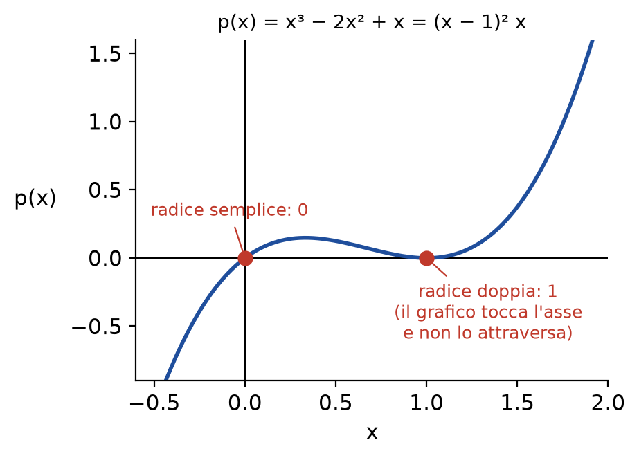
Una radice doppia: il grafico tocca l'asse x senza attraversarlo.
Radici "contate con molteplicità"
Nel secondo esempio il polinomio ha grado 3 e ha due radici distinte, 1 e 0, ma 1 ha molteplicità 2: contata con la sua molteplicità vale come due radici, quindi in totale si hanno 2 + 1 = 3 radici. Questo è il senso di "radici contate con molteplicità": le due radici "uguali" sono lo stesso numero, ma si contano due volte.
Nel prossimo capitolo si vede quante radici può avere al massimo un polinomio.
13. Quante Radici Ha un Polinomio: Induzione, Grado 2 e Teorema Fondamentale dell'Algebra
Al massimo n radici
Proposizione. Un polinomio di grado n ≥ 1 ha al massimo n radici, contate con molteplicità.
Nell'ultimo esempio del capitolo 12 un polinomio di grado 3 aveva 3 radici contate con molteplicità (1 doppia e 0 semplice): non può averne 4 o 5, ne può avere al massimo 3, e potrebbe averne di meno.
Un richiamo sull'induzione
La dimostrazione usa l'induzione, che il docente ha spiegato prima di usarla. Si vuole dimostrare che una proprietà vale per tutti i numeri naturali, qui per tutti i gradi n ≥ 1. Farlo grado per grado non finirebbe mai. Si dimostrano invece due cose:
1. la proprietà vale per n = 1 (il caso base);
2. se vale per un n qualsiasi, allora vale anche per n + 1 (il passo induttivo).
Il passo 2 si applica a ripetizione: dal caso base 1 si arriva a 2, da 2 a 3, da 3 a 4, e così via fino a qualunque grado.
La dimostrazione
Caso base, n = 1. Un polinomio di grado 1 è del tipo ax + b (con a ≠ 0; i coefficienti possono essere reali, come in 7x + 13, o complessi). Si ha ax + b = 0 se e solo se ax = −b, cioè x = −b/a: c'è esattamente una radice, quindi al massimo una.
Passo induttivo. Si assume che la proposizione valga per un certo n e si dimostra per n + 1. Sia p(x) un polinomio di grado n + 1. Ci sono due possibilità.
1. p non ha nessuna radice. Non c'è nulla da dimostrare, perché "al massimo n + 1" ammette anche zero radici.
2. p ha almeno una radice a. Per la proposizione del capitolo 12, (x − a) divide p, cioè p(x) = (x − a)q(x), e q(x) ha grado n. Per l'ipotesi induttiva q ha al massimo n radici contate con molteplicità. Ma p(x) = 0 vale solo quando uno dei due fattori è zero (un prodotto è nullo se e solo se lo è uno dei fattori): o x = a, o x è una radice di q. Le radici di p, contate con molteplicità, sono esattamente quelle di q più a: in tutto al massimo n + 1.
Il grado zero è escluso dall'enunciato: un polinomio di grado 0 è un numero; se non è zero non ha radici, ma il polinomio zero ha infinite radici (ogni valore è una radice).
Equazioni di secondo grado
Sia p(x) = ax² + bx + c con a, b, c reali e a ≠ 0. Con il discriminante Δ = b² − 4ac:
se Δ > 0, p ha due radici reali distinte x = (−b ± √Δ)/(2a);
se Δ = 0, p ha una sola radice x = −b/(2a), con molteplicità 2;
se Δ < 0, p non ha radici reali.
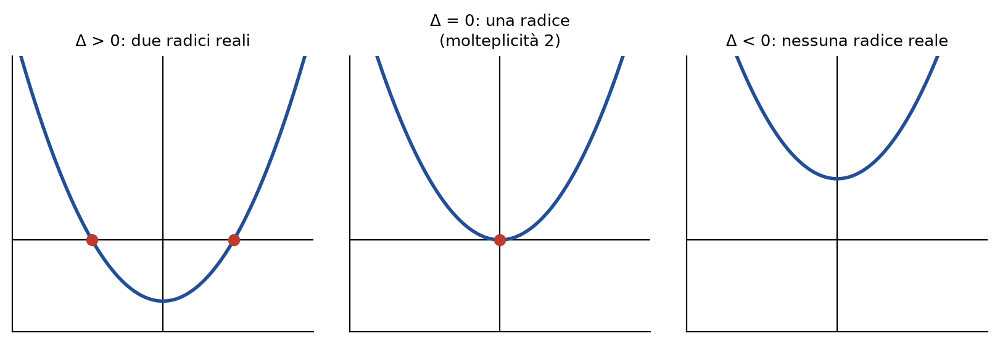
I tre casi del discriminante per un polinomio di grado 2.
Ci sono dunque polinomi senza radici reali. Per questo si sono introdotti i numeri complessi: in ℂ si può calcolare la radice quadrata di qualsiasi numero, anche negativo o complesso. Per Δ ≠ 0 i due valori ±√Δ sono i due numeri complessi distinti che risolvono z² = Δ (basta la radice quadrata, tra le radici n-esime del capitolo 9); per Δ = 0 coincidono e la radice è doppia. Quindi un polinomio di grado 2 ha sempre due radici complesse: possono essere due reali distinte, due uguali o due complessi non reali.
Il teorema fondamentale dell'algebra
Teorema (fondamentale dell'algebra). Un polinomio p(x) a coefficienti complessi di grado n ≥ 1 ha esattamente n radici complesse, contate con molteplicità.
Il docente non lo dimostra: le dimostrazioni accessibili usano strumenti di analisi più avanzati, quindi nel corso si enuncia soltanto. Esempio: x² + 1 non ha radici reali, ma ha le due radici complesse i e −i, perché i² = −1 e (−i)² = −1, e in entrambi i casi si ottiene p = 0. È il motivo principale per cui si sono introdotti i numeri complessi: studiando i polinomi si vogliono sempre trovare tutte le radici, e il numero giusto di radici (il grado) si ottiene solo con i numeri complessi.
Due complementi (non svolti a lezione)
Sono due risultati che non sono stati trattati in aula.
Radici complesse di un polinomio di grado 2. Per ax² + bx + c la formula x = (−b ± √Δ)/(2a) vale anche con i complessi, dove ±√Δ indica le due radici quadrate complesse di Δ. Esempio: le radici di x² + (1 − i)x − i hanno Δ = (1 − i)² + 4i = 2i, con radici quadrate ±(1 + i), quindi x = (−(1 − i) ± (1 + i))/2, cioè x₊ = i e x₋ = −1.
Polinomi a coefficienti reali. Se p(x) ha coefficienti reali e z è una radice complessa, allora anche il coniugato z̄ è una radice. Dimostrazione: da p(z) = anzⁿ + … + a1z + a0 = 0, applicando il coniugio a entrambi i membri si ottiene anz̄ⁿ + … + a1z̄ + a0 = 0, perché il coniugio rispetta somme e prodotti (e quindi le potenze, capitolo 5) e i coefficienti, essendo reali, coincidono con i loro coniugati. Dunque p(z̄) = 0.
Con questo si chiude la parte sui polinomi; il corso passa agli spazi vettoriali.
14. Lo Spazio Euclideo ℝn: Vettori, Coordinate e Rappresentazioni
Perché un punto di vista algebrico
Dopo aver costruito gli strumenti necessari (i campi, i numeri complessi, i polinomi), si possono finalmente definire gli spazi vettoriali, che saranno gli oggetti fondamentali del corso. Non si parte però dalla definizione generale, ma da un esempio speciale: lo spazio euclideo.
Lo spazio euclideo è lo spazio su cui si fa la geometria classica, quella di punti e rette. Gli spazi che si riescono a vedere e su cui si può fare geometria visiva hanno però dimensione due o tre, mentre nelle applicazioni servono spesso spazi molto più grandi, che non si possono disegnare. Per manipolare questi oggetti bisogna quindi farlo in modo algebrico: è per questo che lo spazio euclideo si definisce con una formula e non con un disegno.
Che cos'è ℝn
Sia n ≥ 1 un numero naturale.
Definizione. Lo spazio euclideo n-dimensionale è l'insieme ℝn = ℝ × ℝ × … × ℝ (n copie di ℝ).
Chi ha visto il prodotto cartesiano in Matematica discreta riconosce subito la costruzione: ℝn è il prodotto cartesiano di ℝ con sé stesso n volte. I suoi elementi sono quindi le n-uple (x1, …, xn) di n numeri reali. Per pura comodità, anziché scriverle in orizzontale come si fa di solito, le n-uple si scrivono in verticale:
v = (x1, x2, …, xn), con x1, …, xn ∈ ℝ,
cioè come vettore colonna, con x1 in alto e xn in basso. Nelle formule in questo riassunto un vettore colonna si indica per brevità con le sue componenti separate da virgole.
In parole povere: R^n è l'insieme di tutte le liste ordinate di n numeri reali. Per n = 2 sono le coppie (x, y), cioè i punti del piano; per n = 3 le terne, i punti dello spazio; per n più grande non si disegna, ma si lavora allo stesso modo, come un elenco di n misure (per esempio altezza, peso, età: tre numeri).
Un elemento di ℝn si chiama vettore. Il termine in realtà ha un significato più generale, che si vedrà con gli spazi vettoriali, ma per ora "vettore" vuol dire semplicemente "elemento di ℝn". Dato v = (x1, …, xn), il numero xi è la i-esima componente o i-esima coordinata di v: x1 è la prima componente, x2 la seconda e così via.
Il vettore con tutte le componenti nulle, (0, …, 0), si chiama origine e si indica con 0 oppure con O.
In parole povere: un vettore di R^n è semplicemente una lista di n numeri, e ogni numero della lista è una sua componente. Nel piano (3, 2) è un vettore con prima componente 3 e seconda 2. L'origine è la lista fatta di soli zeri, il punto di partenza.
Il nome "n-dimensionale" va letto per ora come una parola unica: la nozione di dimensione non è ancora stata definita. Come sottolineato a lezione, si vedrà più avanti che ℝn è effettivamente uno spazio di dimensione n, ma serve prima definire che cosa significa.
I casi ℝ² e ℝ³
Due casi speciali si possono rappresentare geometricamente.
Per n = 2, ℝ² = { (x, y) | x, y ∈ ℝ } è l'insieme delle coppie di numeri reali, il piano cartesiano: un vettore di coordinate a e b si rappresenta con il punto del piano di coordinate a e b. Per esempio il punto (3, 2) si ottiene partendo dall'origine, andando avanti di 3 unità nella direzione dell'asse x e poi su di 2 unità nella direzione dell'asse y.
Per n = 3, ℝ³ = { (x, y, z) | x, y, z ∈ ℝ } è lo spazio cartesiano a tre dimensioni: il vettore di coordinate a, b, c corrisponde al punto che si raggiunge partendo dall'origine, spostandosi di a unità lungo x, poi di b unità lungo y e infine di c unità lungo z. I tre assi sono tre direzioni indipendenti (alla lavagna un asse esce dal piano della lavagna e non si può disegnare fedelmente). Per esempio il punto con x = 3, y = 4 e z = 2 corrisponde al vettore (3, 4, 2).
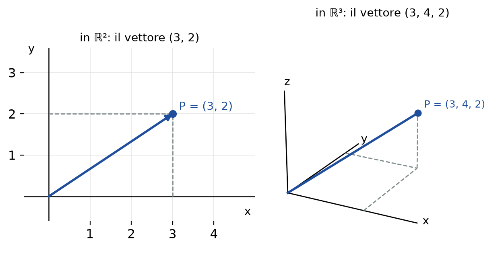
Il vettore (3, 2) in ℝ² e il vettore (3, 4, 2) in ℝ³: punto e freccia dall'origine.
Tre modi di vedere un vettore
In generale un vettore di ℝn si può rappresentare in tre modi:
come n-upla di numeri (x1, …, xn): è il modo che si usa di più, perché è quello che permette di fare i conti;
come punto di coordinate (x1, …, xn);
come freccia che va dall'origine al punto di coordinate (x1, …, xn).
Queste tre rappresentazioni sono sostanzialmente equivalenti, e si sceglie ogni volta la scrittura più comoda: quando serve calcolare si usa la n-upla, quando serve disegnare il punto o la freccia. Di solito si usano le lettere maiuscole P, Q per i punti e le minuscole v, w per i vettori, ma questo dipende dal contesto.
Il capitolo successivo introduce le due operazioni fondamentali che si possono fare con i vettori di ℝn: la somma e la moltiplicazione per un numero.
15. Somma e Prodotto per Scalare in ℝn
Quali operazioni si possono fare
Come sottolineato a lezione, il punto dell'algebra è questo: ogni volta che si introduce un insieme, ci si deve chiedere quali operazioni si possono fare su di esso. Su ℝn le operazioni importanti sono due: una somma tra vettori e una moltiplicazione di un vettore per un numero reale.
La somma di vettori
La somma prende come input due vettori e restituisce un nuovo vettore. Si calcola termine a termine: se v = (x1, …, xn) e w = (y1, …, yn), allora
v + w = (x1 + y1, …, xn + yn).
La prima componente della somma è la somma delle prime componenti, la seconda è la somma delle seconde, e così via fino alla n-esima. Per esempio in ℝ² con v = (3, 1) e w = (1, 2) si ha v + w = (3 + 1, 1 + 2) = (4, 3).
A livello geometrico la somma si ottiene con la regola del parallelogramma. Si pensano i due vettori come frecce uscenti dall'origine e si costruisce il parallelogramma che ha v e w come lati: il vertice opposto all'origine è esattamente la somma v + w. Nell'esempio si parte da (3, 1) e (1, 2) e si arriva al punto (4, 3), come in figura.
Il prodotto per uno scalare
Dato un vettore v = (x1, …, xn) e un numero reale a, il prodotto a·v è ancora un vettore, le cui componenti si ottengono moltiplicando tutte le componenti di v per a:
a·v = (a x1, …, a xn).
Geometricamente, moltiplicare per a vuol dire allungare (o accorciare) la freccia di un fattore a. Con v = (3, 1) e a = 2 si ottiene 2v = (6, 2): la freccia ha lunghezza doppia. Se il numero a è negativo, il vettore a·v ha lunghezza |a| volte quella di v e verso opposto a quello di v: moltiplicare per un numero negativo vuol dire invertire il verso. Per esempio −v = (−3, −1) è la freccia di v con il verso invertito.
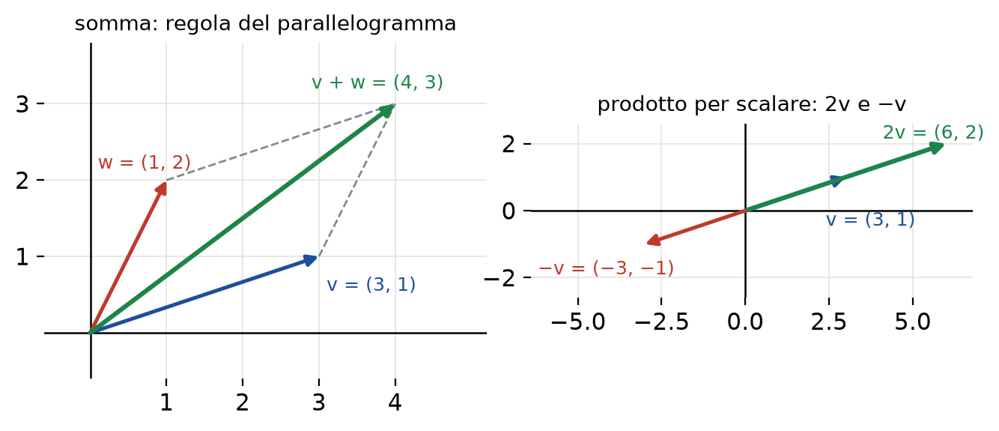
Somma di due vettori di ℝ² con la regola del parallelogramma, e prodotto di un vettore per lo scalare 2 e per −1.
Il coefficiente angolare di una freccia, cioè il rapporto tra la y e la x, non cambia quando la si moltiplica per uno scalare: per v = (3, 1) vale 3 diviso 1 e quello di 2v = (6, 2) è 6 diviso 2, lo stesso numero (il rapporto non è definito se x = 0). Il coefficiente angolare individua la retta su cui sta la freccia, mentre il segno dello scalare ne determina il verso: moltiplicare per uno scalare non sposta dunque la freccia fuori dalla sua retta, ma ne cambia la lunghezza e, se lo scalare è negativo, il verso.
Gli scalari
Nella moltiplicazione per un numero i numeri hanno un ruolo particolare: non servono a quantificare nulla, ma a moltiplicare vettori. In questo contesto i numeri si chiamano scalari, e l'operazione si chiama moltiplicazione per scalare.
Definizione. Uno scalare è un numero o, più precisamente, un elemento di un campo. Il campo va scelto in anticipo: potrebbe essere il campo dei numeri reali, e allora gli scalari sono numeri reali, oppure il campo dei numeri complessi, e allora gli scalari sono numeri complessi, e così via. Per ora, in ℝn, gli scalari sono numeri reali.
In parole povere: gli scalari sono i numeri "per cui si può moltiplicare" un vettore, cioè le manopole con cui si allunga o si accorcia. Quali siano (reali, complessi...) va deciso all'inizio, e devono formare un campo.
Il capitolo successivo raccoglie le proprietà di queste due operazioni e dà il nome alla struttura algebrica che ne risulta.
16. Le Proprietà di ℝn e i Gruppi
Le otto proprietà di somma e prodotto
In ℝn la somma e la moltiplicazione per scalare hanno otto proprietà. Le prime quattro riguardano solo la somma, le altre quattro mettono insieme la somma e il prodotto per scalare. Per ogni u, v, w ∈ ℝn e per ogni a, b ∈ ℝ valgono:
1. associatività della somma: (u + v) + w = u + (v + w);
2. elemento neutro: esiste un vettore 0ℝⁿ ∈ ℝn tale che 0ℝⁿ + v = v + 0ℝⁿ = v per ogni v;
3. opposto: per ogni v esiste un vettore u tale che v + u = u + v = 0ℝⁿ;
4. commutatività della somma: u + v = v + u;
5. a·(b·v) = (ab)·v;
6. (a + b)·v = a·v + b·v;
7. a·(v + w) = a·v + a·w;
8. 1·v = v.
Il vettore della proprietà 2 si scrive con il simbolo 0ℝⁿ per non confonderlo con il numero zero: è il vettore con tutte le componenti nulle, cioè l'origine (0, …, 0). L'opposto della proprietà 3 di un vettore v = (x1, …, xn) è semplicemente u = (−x1, …, −xn), che si indica con −v.
Sulle ultime quattro proprietà conviene essere precisi sulle operazioni che compaiono, perché sono di tipi diversi:
nella proprietà 5 il prodotto "ab" è un prodotto tra numeri, cioè una moltiplicazione in ℝ; tutte le altre moltiplicazioni sono moltiplicazioni per scalare. Dice che moltiplicare un vettore prima per b e poi per a dà lo stesso risultato che moltiplicarlo per il numero ab;
nella proprietà 6 la somma a + b è una somma di numeri reali, mentre la somma a destra, a·v + b·v, è una somma di vettori;
la proprietà 7 è un'altra distributività, in cui tutte le operazioni sono tra vettori o per scalare;
nella proprietà 8 il numero 1 è l'elemento neutro del prodotto in ℝ (come in ogni campo, esiste un elemento neutro del prodotto); la proprietà dice che moltiplicare un vettore per 1 non lo cambia.
Perché la commutatività (la proprietà 4) è separata dall'associatività? Come spiegato a lezione, perché si vuole impostare tutto in modo da poterlo applicare a contesti più generali, in cui l'ordine dell'operazione può essere importante.
Queste proprietà andrebbero dimostrate verificandole una per una sulle componenti: non è difficile, ma non lo si fa a lezione. Non è una lista scritta per divertimento: queste sono proprio le proprietà che definiscono uno spazio vettoriale, come si vedrà nel capitolo 17.
I gruppi
Le prime tre proprietà coinvolgono una sola operazione, la somma. Un insieme dotato di una operazione che soddisfa proprietà di questo tipo prende un nome.
Definizione. Un gruppo è un insieme G dotato di un'operazione binaria, cioè di una funzione che a ogni coppia di elementi (a, b) di G associa un elemento di G, indicato con a ⋆ b, in modo che siano soddisfatte tre proprietà:
1. associatività: (a ⋆ b) ⋆ c = a ⋆ (b ⋆ c) per ogni a, b, c;
2. elemento neutro: esiste e ∈ G con e ⋆ a = a ⋆ e = a per ogni a;
3. inversi: per ogni a esiste a′ ∈ G con a ⋆ a′ = a′ ⋆ a = e.
In parole povere: un gruppo è un insieme con una sola operazione che si comporta in modo "ragionevole": raggruppare le operazioni non cambia il risultato, esiste un elemento che non cambia nulla (come lo 0 per la somma) e ogni elemento può essere "annullato" da un altro (il suo opposto). Per esempio gli interi con la somma formano un gruppo.
Il simbolo ⋆ (asterisco) è un nome astratto per l'operazione: nel caso di ℝn l'operazione è la somma, e si usa +. Quando l'operazione assomiglia a una moltiplicazione, l'elemento a′ si chiama inverso; nel caso speciale dell'addizione si chiama opposto.
Un gruppo si dice commutativo (o abeliano) se vale anche la commutatività: a ⋆ b = b ⋆ a per ogni a, b. Il docente ha osservato che in Matematica discreta si incontreranno gruppi molto importanti, come i gruppi di permutazioni, che non sono abeliani: in essi l'ordine dell'operazione conta.
In parole povere: in un gruppo abeliano l'ordine non conta: fare a poi b è come fare b poi a. La somma di numeri lo è; invece mettersi prima i calzini e poi le scarpe non si può invertire, e lo stesso vale per molte operazioni più complesse (come comporre permutazioni).
Esempi. ℝn con la somma è un gruppo abeliano, perché valgono le proprietà 1-4. Anche l'insieme ℤ dei numeri interi con la somma è un gruppo commutativo, e lo stesso vale per ℚ, ℝ e ℂ con la somma. Gli insiemi ℚ ∖ {0}, ℝ ∖ {0} e ℂ ∖ {0} sono gruppi commutativi anche con la moltiplicazione. Non sono invece gruppi: ℕ con la somma, perché manca l'opposto (la proprietà 3), e ℤ con la moltiplicazione, perché manca l'inverso: per esempio 2 non ha inverso moltiplicativo in ℤ.
Con le definizioni di gruppo e di gruppo abeliano si può dire in breve che le proprietà 1-4 di ℝn equivalgono a dire che (ℝn, +) è un gruppo abeliano, e il capitolo successivo parte proprio da qui.
17. Gli Spazi Vettoriali su un Campo
Il campo degli scalari
Un insieme che ha due operazioni, una somma e una moltiplicazione per scalare, con le stesse proprietà di ℝn, è uno spazio vettoriale. Prima di darne la definizione bisogna essere precisi su un punto: gli scalari sono elementi di un campo, ma quale campo? Va scelto a priori. L'ordine corretto per definire uno spazio vettoriale è quindi scegliere prima il campo degli scalari, cioè i numeri per cui si vuole poter moltiplicare, e solo dopo l'insieme e le sue operazioni.
Richiamiamo la definizione di campo del capitolo 2, riformulandola con il linguaggio dei gruppi: un campo è un insieme dotato di due operazioni, una somma e un prodotto, tali che l'insieme sia un gruppo commutativo con la somma (elemento neutro 0), che l'insieme privato dello 0 sia un gruppo commutativo con il prodotto (elemento neutro 1) e che valga la proprietà distributiva a·(b + c) = a·b + a·c. Sono campi ℚ, ℝ e ℂ, mentre ℤ non lo è, perché 2 non ha inverso moltiplicativo.
La definizione
Definizione. Fissiamo un campo 𝕂. Uno spazio vettoriale su 𝕂 è un insieme V, i cui elementi si chiamano vettori, con due operazioni:
una somma + : V × V → V, che a due vettori v, w associa un vettore v + w;
una moltiplicazione per scalare · : 𝕂 × V → V, che a uno scalare a e a un vettore v associa un vettore a·v,
tali che siano soddisfatte:
le proprietà 1-4 del capitolo 16, cioè (V, +) è un gruppo abeliano;
le proprietà 5-8, dove gli scalari sono elementi di 𝕂.
In parole povere: uno spazio vettoriale è un insieme di oggetti (i vettori) che puoi sommare tra loro e allungare o accorciare con numeri presi da un campo, seguendo le solite regole di calcolo, e restando sempre dentro l'insieme. Non conta che cosa siano gli oggetti (frecce, liste di numeri, polinomi, funzioni): contano solo le due operazioni e le loro proprietà.
Nelle dispense questo si enuncia con cinque condizioni: (V, +) è un gruppo commutativo e valgono λ(v + w) = λv + λw, (λ + μ)v = λv + μv, (λμ)v = λ(μv) e 1v = v, per ogni v, w ∈ V e λ, μ ∈ 𝕂. Sono le stesse proprietà elencate a lezione, raggruppate in modo diverso: il gruppo commutativo corrisponde alle proprietà 1-4, λ(v + w) = λv + λw alla 7, (λ + μ)v = λv + μv alla 6, (λμ)v = λ(μv) alla 5 e 1v = v alla 8. Per noi il campo 𝕂 sarà di solito ℝ oppure ℂ, ma per la definizione può essere qualsiasi campo.
L'elemento neutro del gruppo (V, +) si indica con 0V, o semplicemente con 0, ed è l'origine dello spazio vettoriale. Non va confuso con lo zero del campo 𝕂: il simbolo 0 può indicare cose diverse e il significato si capisce dal contesto.
I quattro ingredienti
Come sottolineato a lezione, per comunicare uno spazio vettoriale, a un collega, a un computer o a chi legge, bisogna dire quattro cose:
1. l'insieme V;
2. il campo degli scalari 𝕂;
3. come è definita la somma;
4. come è definita la moltiplicazione per scalare.
Non sono informazioni che si possono ricavare: vanno specificate, e tutte e quattro. Ovviamente le due operazioni devono soddisfare le proprietà della definizione, ma a livello di comunicazione servono tutti e quattro gli ingredienti.
Esempi
ℝn su ℝ. L'insieme è ℝn, il campo è ℝ, la somma è la somma termine a termine e il prodotto per scalare moltiplica ogni componente per un numero reale (capitolo 15).
Lo spazio ℝ[x] dei polinomi. L'insieme è quello dei polinomi a coefficienti reali, il campo è ℝ. La somma è la somma di polinomi già vista: si sommano termine a termine i coefficienti, (anxn + … + a1x + a0) + (bnxn + … + b1x + b0) = (an + bn)xn + … + (a1 + b1)x + (a0 + b0) (se i due polinomi hanno gradi diversi, si completa quello di grado minore con coefficienti nulli). Il prodotto per uno scalare reale c moltiplica ogni coefficiente per c: c·(anxn + … + a0) = c anxn + … + c a1x + c a0. Con queste operazioni ℝ[x] è uno spazio vettoriale su ℝ. Un esempio con i numeri: (x³ − 2x + 1) + (4x⁴ + x − 3) = 4x⁴ + x³ − x − 2, e 3·(x³ − 2x) = 3x³ − 6x.
Lo spazio 𝕂n. Non c'è nulla di speciale nei numeri reali: per un qualsiasi campo 𝕂 si definisce 𝕂n come l'insieme delle n-uple (x1, …, xn) con x1, …, xn ∈ 𝕂. Si possono considerare, per esempio, ℂn (n-uple di numeri complessi) o ℚn. Le operazioni sono le stesse di ℝn, con la differenza importante che lo scalare a vive ora nel campo 𝕂 scelto, e non più in ℝ. Con queste operazioni 𝕂n è uno spazio vettoriale su 𝕂. Alcuni esempi in ℂ²: (1 + i, −2) + (3i, 1 − i) = (1 + 4i, −1 − i), e (2 + i)·(3, 1 − i) = (6 + 3i, 3 − i).
Lo spazio 𝕂[x] dei polinomi. Fissato un campo 𝕂, si indica con 𝕂[x] l'insieme dei polinomi con coefficienti in 𝕂. Valgono le stesse formule di ℝ[x], con la differenza che quando si moltiplica un polinomio per uno scalare, lo scalare deve essere in 𝕂. Con queste due operazioni 𝕂[x] è uno spazio vettoriale su 𝕂.
Resta da controllare che in tutti questi esempi valgano davvero le proprietà della definizione: si fa verificando le proprietà componente per componente (o coefficiente per coefficiente), usando le proprietà del campo. Per esempio, per la proprietà 7 in 𝕂n: a·(v + w) ha come componenti a(xi + yi), che per la distributività nel campo diventano a xi + a yi, cioè le componenti di a·v + a·w.
18. Zero, Opposto e Altri Esempi di Spazi Vettoriali
Come trovare lo zero e l'opposto
Tra le proprietà di uno spazio vettoriale ce ne sono due che conviene ricordare: esiste sempre un elemento neutro per la somma, lo zero 0V, e ogni vettore ammette un opposto. Saper calcolare lo zero di uno spazio vettoriale e l'opposto di un vettore è spesso importante, e c'è un modo semplice per farlo sempre.
Proposizione. Sia V uno spazio vettoriale su un campo 𝕂.
Per ogni vettore v ∈ V si ha 0·v = 0V: moltiplicando un qualunque vettore per lo scalare 0 si ottiene lo zero dello spazio.
Per ogni vettore v ∈ V, (−1)·v è l'opposto di v, e si indica con −v.
Nell'enunciato il simbolo 0 compare in due ruoli diversi: nella formula 0·v = 0V il primo 0 è lo zero del campo e il secondo è lo zero dello spazio vettoriale.
Dimostrazione.
1. Poiché 0 è l'elemento neutro della somma in 𝕂, si ha 0 = 0 + 0, quindi 0·v = (0 + 0)·v.
2. Per la proprietà 6, (0 + 0)·v = 0·v + 0·v. Si ha quindi 0·v = 0·v + 0·v.
3. Sommando a entrambi i membri l'opposto di 0·v (che esiste per la proprietà 3) si ottiene 0V = 0·v + (−0·v) = (0·v + 0·v) + (−0·v) = 0·v + (0·v + (−0·v)) = 0·v + 0V = 0·v, usando l'associatività e l'elemento neutro. È il passaggio che si indica come "semplificare".
4. Per l'opposto: v + (−1)·v = 1·v + (−1)·v = (1 + (−1))·v = 0·v = 0V, usando la proprietà 8 e poi la proprietà 6. Dunque (−1)·v soddisfa la proprietà che definisce l'opposto di v. ∎
Il secondo punto si dimostra in due righe.
Esempi.
In ℝ[x] lo zero è il polinomio nullo 0xn + … + 0x + 0. Se non si riesce a "vederlo", si prende un polinomio qualunque, per esempio x + 1, e lo si moltiplica per 0: 0·(x + 1) = 0x + 0 = 0, il polinomio nullo. L'opposto di p(x) = anxn + … + a1x + a0 si ottiene moltiplicandolo per −1: è −p(x) = −anxn − … − a1x − a0, cioè il polinomio con tutti i coefficienti cambiati di segno.
In 𝕂n lo zero è 0·(x1, …, xn) = (0·x1, …, 0·xn) = (0, …, 0), proprio quello trovato per ℝn.
Ogni campo è uno spazio vettoriale su sé stesso
Nello spazio 𝕂n il numero n è qualunque numero naturale maggiore di zero. Che cosa succede per n = 1? L'insieme 𝕂¹ è l'insieme delle "1-uple" (x), con x ∈ 𝕂, cioè semplicemente 𝕂. Quindi ogni campo 𝕂 è uno spazio vettoriale su 𝕂 stesso: la somma è la somma del campo, e la moltiplicazione per scalare è il prodotto del campo. Le proprietà della definizione seguono dalle proprietà del campo: (𝕂, +) è un gruppo commutativo perché lo è nella definizione di campo (proprietà 1-4), la 7 è la distributività del campo, la 6 segue dalla commutatività e dalla distributività, la 5 è l'associatività del prodotto e la 8 dice che 1 è l'elemento neutro per il prodotto. Ad esempio ℂ è uno spazio vettoriale su ℂ.
Cambiare il campo degli scalari: ℂ su ℝ
Definire uno spazio vettoriale serve proprio a dire qual è l'insieme degli scalari per cui si può moltiplicare. L'esempio importante è ℂ: lo si può considerare come spazio vettoriale su ℂ, ma anche su ℝ, se si decide di moltiplicare i numeri complessi solo per numeri reali. L'insieme e la somma restano gli stessi (come gruppo con la somma ℂ è lo stesso), cambia soltanto il campo degli scalari. Con le operazioni di somma e di moltiplicazione per numeri reali, ℂ è dunque uno spazio vettoriale su ℝ.
Questo fatto è più generale: quando si hanno due campi e uno contiene l'altro, come ℝ dentro ℂ, il campo più grande si può sempre considerare uno spazio vettoriale sul campo più piccolo, moltiplicando solo per gli scalari del campo piccolo. Come sottolineato a lezione, non è un'osservazione casuale: è un concetto fondamentale di una teoria importante, la teoria di Galois.
Una cosa da ricordare: nella definizione di spazio vettoriale la somma non dipende dal campo scelto. Il campo entra in gioco solo nella seconda operazione, quando si decide per quali scalari si moltiplica. Per questo ℂ con gli scalari in ℂ e ℂ con gli scalari in ℝ sono due spazi vettoriali diversi, anche se l'insieme e la somma coincidono.
Lo spazio delle funzioni
Consideriamo l'insieme V di tutte le funzioni f : ℝ → ℝ, quelle di cui si studiano i grafici alle superiori. In V si definiscono due operazioni punto per punto: per definire una funzione bisogna dire quanto vale in ogni x.
La somma di due funzioni f e g è la funzione f + g il cui valore in x è (f + g)(x) = f(x) + g(x). Per esempio, se f(x) = eˣ e g(x) = sen x, la funzione f + g è eˣ + sen x: in ogni punto si calcolano prima eˣ e sen x e poi si somma.
Il prodotto per uno scalare a ∈ ℝ è la funzione a·f il cui valore in x è (a·f)(x) = a·f(x). Per esempio 3·ex² è la funzione che in ogni punto calcola ex² e poi moltiplica per 3.
Con queste due operazioni V è uno spazio vettoriale su ℝ. Le dispense propongono lo stesso schema per le funzioni da [0, 1] in 𝕂 e per le successioni (xn) di elementi di 𝕂, con somma e prodotto per scalare definiti componente per componente.
Gli spazi di questo tipo sono molto diversi da spazi come ℝn: più "selvaggi", mentre ℝn è più docile. Il concetto di dimensione, che si definirà più avanti, permetterà di quantificare questa differenza: spazi come ℝn hanno dimensione finita, mentre lo spazio di tutte le funzioni ha dimensione infinita.
Un controesempio: i polinomi di grado esattamente k
L'esercizio 5.7 delle dispense chiede di controllare che l'insieme 𝕂k[x] dei polinomi di grado minore o uguale a k è uno spazio vettoriale, e perché l'insieme dei polinomi di grado esattamente k non lo sia, se k ≥ 1. Il motivo è quello già visto nel capitolo 10: la somma può far diminuire il grado. Per esempio x² e −x² + x hanno entrambi grado 2, ma la loro somma è x, che ha grado 1, quindi la somma esce dall'insieme. Inoltre lo zero, il polinomio nullo, non ha grado k.
19. Le Matrici e lo Spazio M(m, n, 𝕂)
Un nuovo esempio fondamentale
Dopo aver visto gli spazi vettoriali e i primi esempi (ℝn, i polinomi, le funzioni), si introduce un altro esempio molto importante: lo spazio delle matrici. Come sottolineato a lezione, da qui in poi le matrici compaiono in quasi tutte le lezioni del corso, quindi vale la pena impararle bene fin dall'inizio.
Come sempre bisogna fissare prima il campo degli scalari: sia 𝕂 un campo fissato. Chi trova astratta questa frase può pensare che 𝕂 sia ℝ oppure ℂ: nel 99% degli esempi e delle applicazioni è così. Esistono moltissimi altri campi, ma la teoria funziona allo stesso modo per tutti, e i matematici la scrivono in generale proprio per questo.
Che cos'è una matrice
Definizione. Una matrice m × n a coefficienti in 𝕂 (si legge «m per n») è una tabella rettangolare con m righe e n colonne
A = ( a11 a12 … a1n ; a21 a22 … a2n ; … ; am1 am2 … amn ),
in cui ogni aij è un elemento di 𝕂 (qui le righe sono separate da punto e virgola). Gli aij si chiamano coefficienti, entrate o termini della matrice.
In parole povere: una matrice è una tabella di numeri, con righe in orizzontale e colonne in verticale. Dire che è «m per n» significa che ha m righe e n colonne. Ogni numero ha un indirizzo, dato da due indici: la riga in cui sta e la colonna in cui sta.
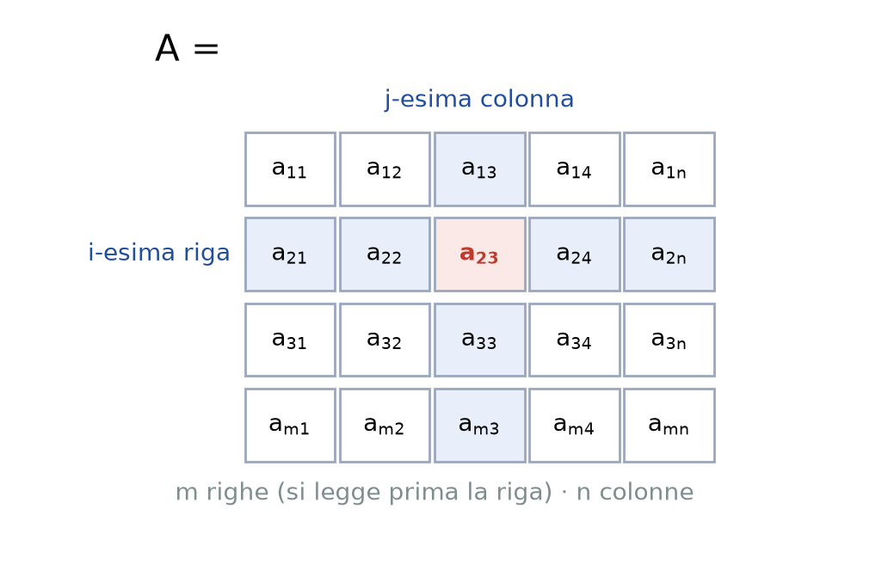
Una matrice m × n: l'entrata aᵢⱼ sta nella i-esima riga e nella j-esima colonna.
Gli indici si leggono sempre nello stesso ordine: prima la riga, poi la colonna. L'entrata aij è quella nella i-esima riga e nella j-esima colonna, con i da 1 a m e j da 1 a n. Sembra un dettaglio, ma è importantissimo: in Excel, per esempio, una casella si chiama C2, cioè prima la colonna (la lettera) e poi la riga (il numero), mentre in matematica è esattamente il contrario. Tutti i matematici, in ogni libro e in ogni articolo, usano questa convenzione, e invertire l'ordine è un errore tipico da esame.
Le righe di A si indicano con A1, …, Am e le colonne con A1, …, An; per esempio Ai = (ai1, ai2, …, ain) è la i-esima riga.
L'insieme di tutte le matrici m × n a coefficienti in 𝕂 si indica con M(m, n, 𝕂), o semplicemente M(m, n) quando il campo è chiaro.
In parole povere: M(m, n, 𝕂) è la scatola che contiene tutte le tabelle di m righe e n colonne con numeri presi da 𝕂.
Qualche esempio
( 2 , π , 1 ; √2 , −1 , 0 ) è una matrice 2 × 3 a coefficienti reali: ha due righe e tre colonne, e a12 = π.
( 3+i , π ; i , √2+1 ; 1 , √5 ) è una matrice 3 × 2 a coefficienti in ℂ.
Una matrice con una sola riga è una matrice 1 × n, per esempio (1, 7, −2). Quando le entrate sono vicine conviene scriverle con una virgola per non confondere 1, 7, −2 con il numero 17 e il segno meno.
Una matrice con una sola colonna è una matrice m × 1. Ma allora è semplicemente un vettore colonna: M(m, 1, 𝕂) si identifica con 𝕂m. Per esempio una matrice 3 × 1 è un elemento di ℝ³, e una matrice 4 × 1 è un elemento di ℝ⁴. Si può quindi pensare ai vettori di 𝕂m come a particolari matrici, ed è molto comodo farlo.
Una nota di precisione: formalmente una colonna di numeri e un elemento di 𝕂m sono oggetti distinti, ma si possono identificare senza rischio. Conviene farlo proprio perché permette di pensare sempre ai vettori di 𝕂m come a vettori colonna.
Somma e prodotto per scalare
Per fare di M(m, n, 𝕂) uno spazio vettoriale bisogna dire come si sommano due matrici e come si moltiplica una matrice per uno scalare. Si fa entrata per entrata: per A = (aij) e B = (bij) dello stesso tipo e per λ ∈ 𝕂,
(A + B)ij = aij + bij e (λA)ij = λ·aij.
In parole povere: per sommare due matrici si sommano i numeri che stanno nello stesso posto; per moltiplicarle per un numero si moltiplica ogni entrata per quel numero. È come lavorare con due tabelle sovrapposte, casella per casella.
Esempi in M(3, 2, ℝ), con le righe separate da punto e virgola:
( 2 3 ; 1 1 ; 0 5 ) + ( −1 1 ; 0 1 ; 1 4 ) = ( 1 4 ; 1 2 ; 1 9 ): in ogni posto si sommano le due entrate (per esempio, nella prima riga, 2 + (−1) = 1 e 3 + 1 = 4);
−2 · ( 1 2 ; 3 4 ; 5 6 ) = ( −2 −4 ; −6 −8 ; −10 −12 ): ogni entrata si moltiplica per −2.
Si possono sommare solo due matrici della stessa taglia, cioè con lo stesso numero di righe e lo stesso numero di colonne: non ha senso sommare una matrice 3 × 2 e una 7 × 9. Qualcuno potrebbe pensare di completare con degli zeri la più piccola, ma è un'idea che non è utile e non si usa.
M(m, n, 𝕂) è uno spazio vettoriale
Con queste due operazioni M(m, n, 𝕂) è uno spazio vettoriale su 𝕂: le proprietà della somma e del prodotto per scalare (commutativa, associativa, distributive, ecc.) si controllano facilmente perché le operazioni si fanno entrata per entrata, e in ogni singola entrata sono quelle dei numeri di 𝕂.
Il vettore nullo (la matrice «zero») è la matrice con tutte le entrate uguali a 0; si ottiene anche come 0·A per una matrice A qualunque.
L'opposto di una matrice A è la matrice −A = (−1)·A, con tutte le entrate cambiate di segno.
Quindi una matrice è un vettore nel senso del capitolo 17: un elemento di uno spazio vettoriale. Come sottolineato a lezione, la parola «vettore» non va associata solo alle frecce o alle colonne di numeri: è un elemento di un qualunque spazio vettoriale, e può essere una matrice, una funzione, un polinomio, o semplicemente un numero.
Il capitolo successivo parte da qui per chiedersi quali pezzi di uno spazio vettoriale sono a loro volta spazi: i sottospazi.
20. I Sottospazi Vettoriali
Uno spazio dentro un altro spazio
Per parlare di sottospazio bisogna sapere qual è lo spazio più grande da cui si parte, esattamente come per parlare di sottoinsieme serve prima l'insieme. Sia dunque V uno spazio vettoriale su un campo 𝕂: per esempio ℝ³, i vettori tridimensionali che molti conoscono già.
Definizione. Un sottospazio vettoriale di V è un sottoinsieme W ⊆ V che soddisfa tre condizioni:
1. 0 ∈ W: il vettore nullo di V sta in W;
2. se w₁, w₂ ∈ W allora w₁ + w₂ ∈ W: W è chiuso rispetto alla somma;
3. se w ∈ W e λ ∈ 𝕂 allora λ·w ∈ W: W è chiuso rispetto al prodotto per scalare.
In parole povere: un sottospazio è un pezzo di uno spazio vettoriale che è «chiuso in sé»: se prendi due vettori del pezzo e li sommi, resti nel pezzo; se ne allunghi o accorci uno con uno scalare, resti nel pezzo; e dentro c'è sempre l'origine. Non puoi «cadere fuori» facendo le operazioni solite. Per esempio un piano per l'origine di ℝ³ è un sottospazio, mentre un piano che non passa per l'origine no.
La prima condizione ha un motivo preciso: ogni spazio vettoriale ha un elemento zero, quindi anche un sottospazio, che è a sua volta uno spazio, lo deve avere. E lo zero del sottospazio è lo zero dello spazio grande: l'origine è la stessa.
Proposizione. Se W è un sottospazio di V, allora W, con la somma e il prodotto per scalare di V, è a sua volta uno spazio vettoriale su 𝕂.
(Le proprietà della somma e del prodotto valgono in W perché valgono in V, e le condizioni 1-3 garantiscono che le operazioni non facciano uscire da W.) Ogni spazio V ha sempre almeno due sottospazi: il sottospazio banale W = {0}, che contiene solo il vettore nullo, e il sottospazio totale W = V. Per ogni sottospazio vale {0} ⊆ W ⊆ V.
In parole povere: il sottospazio banale è il pezzo più piccolo possibile, la sola origine; il sottospazio totale è il pezzo più grande, tutto lo spazio. Ogni altro sottospazio sta in mezzo.
Un esempio che funziona e uno che non funziona in ℝ³
In V = ℝ³ si considerano due sottoinsiemi che hanno una definizione molto simile:
W₁ = { (a, b, 0) | a, b ∈ ℝ }, i vettori con ultima componente 0;
W₂ = { (a, b, 1) | a, b ∈ ℝ }, i vettori con ultima componente 1.
Entrambi sono sottoinsiemi di ℝ³, ma solo uno è un sottospazio. Si controllano le tre condizioni.
W₁ è un sottospazio.
1. Il vettore nullo (0, 0, 0) ha la forma (a, b, 0) con a = b = 0, quindi sta in W₁.
2. Se (a, b, 0) e (c, d, 0) sono in W₁, la loro somma è (a + c, b + d, 0 + 0) = (a + c, b + d, 0): l'ultima componente è ancora 0, quindi sta in W₁.
3. Se (a, b, 0) ∈ W₁ e λ ∈ ℝ, allora λ·(a, b, 0) = (λa, λb, 0) ha ancora ultima componente 0, quindi sta in W₁.
Geometricamente W₁ è il piano orizzontale per l'origine (il piano x-y).
W₂ non è un sottospazio, e non ne funziona nemmeno una condizione.
1. Il vettore nullo (0, 0, 0) ha ultima componente 0, non 1, quindi non sta in W₂.
2. La somma di (a, b, 1) e (c, d, 1) è (a + c, b + d, 2): l'ultima componente è 2, non 1, quindi esce da W₂.
3. Il multiplo λ·(a, b, 1) = (λa, λb, λ) ha ultima componente λ, che è 1 solo se λ = 1: per esempio il doppio di (1, 1, 1) è (2, 2, 2), che non sta in W₂.
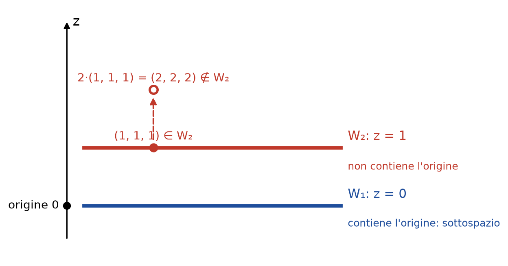
W₁ e W₂ in ℝ³ (visti di lato): il piano per l'origine è un sottospazio, il piano a quota 1 no.
Moralità: la definizione dei due insiemi è quasi identica, ma per uno funziona tutto e per l'altro niente. Quando si vogliono costruire sottospazi conviene imporre che qualcosa sia zero (lo zero ha la bella proprietà che 0 + 0 = 0 e λ·0 = 0), non che sia uguale a un numero diverso da zero. Infatti l'origine deve stare nel sottospazio, e imporre «uguale a 1» la esclude subito.
Altri esempi nel piano
Sia V = ℝ². Tre sottoinsiemi si confrontano con le tre condizioni.
W = { (x, x²) | x ∈ ℝ }, cioè la parabola y = x². Non è un sottospazio: (1, 1) ∈ W ma ½·(1, 1) = (½, ½) ∉ W, perché (½)² = ¼ ≠ ½. La terza condizione fallisce.
W = { (x, 0) | x ≥ 0 }, una semiretta sull'asse x. Non è un sottospazio: (1, 0) ∈ W ma (−1)·(1, 0) = (−1, 0) ∉ W. Anche qui la terza condizione fallisce.
W = { (x, x) | x ∈ ℝ }, la retta y = x. È un sottospazio: (0, 0) ∈ W; (a, a) + (b, b) = (a + b, a + b) ∈ W; λ·(a, a) = (λa, λa) ∈ W.
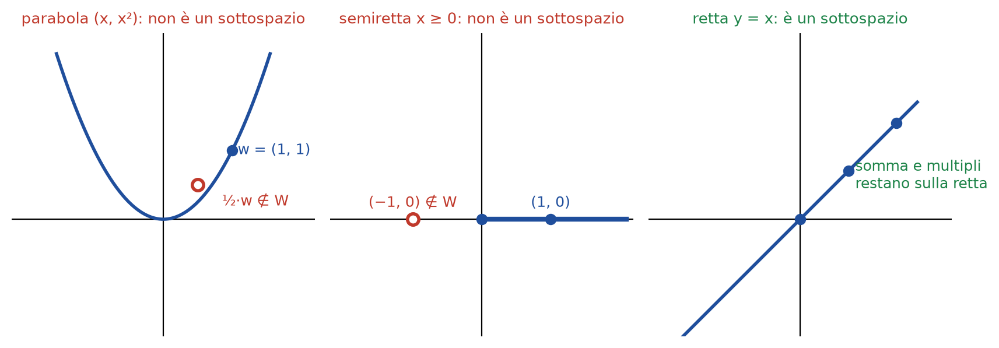
Parabola e semiretta non sono sottospazi (il punto bianco esce dall'insieme), la retta y = x sì.
I polinomi
Fissato d ∈ ℕ, l'insieme 𝕂d[x] dei polinomi di grado minore o uguale a d è un sottospazio dello spazio 𝕂[x] di tutti i polinomi: lo zero è il polinomio nullo (che per convenzione appartiene a 𝕂d[x]), la somma di due polinomi di grado al più d ha ancora grado al più d (il grado può diminuire nella somma, ma non aumentare), e anche un multiplo per uno scalare ha grado al più d.
L'insieme dei polinomi di grado esattamente 5, invece, non è un sottospazio di ℝ[x], con lo stesso fenomeno già visto nel capitolo 18, la somma che fa scendere il grado: x⁵ + x e −x⁵ + x² hanno grado 5, ma la loro somma x² + x ha grado 2, e anche il polinomio nullo non ha grado 5.
Il capitolo successivo vede i sottospazi più importanti dello spazio delle matrici quadrate.
21. Sottospazi di Matrici Quadrate
Matrici quadrate e diagonale principale
Una matrice n × n, cioè con lo stesso numero di righe e di colonne, si dice quadrata. Lo spazio delle matrici quadrate si indica con M(n, 𝕂), o semplicemente M(n) quando il campo è chiaro. Dentro M(n) vivono tanti sottospazi importanti, che si ottengono imponendo condizioni sulle entrate.
Una matrice quadrata ha due diagonali, ma ce n'è una che conta. Gli elementi a11, a22, …, ann, cioè quelli con i due indici uguali, formano la diagonale principale; l'altra diagonale, detta diagonale secondaria, non ha nessuna importanza per quello che si fa in questo corso. Quando si dice «la diagonale» si intende sempre quella principale.
Definizione. Una matrice quadrata A = (aij) di taglia n × n si dice:
diagonale se aij = 0 per ogni i ≠ j (fuori dalla diagonale principale tutto è zero);
triangolare superiore se aij = 0 per ogni i > j (tutto ciò che sta sotto la diagonale è zero);
triangolare inferiore se aij = 0 per ogni i < j (tutto ciò che sta sopra la diagonale è zero);
simmetrica se aij = aji per ogni i, j;
antisimmetrica se aij = −aji per ogni i, j.
In parole povere: immagina di disegnare la diagonale principale, quella che va dall'alto a sinistra al basso a destra.
Diagonale: i numeri possono stare solo sulla diagonale, tutto il resto è zero.
Triangolare superiore: i numeri stanno sulla diagonale e sopra di essa, sotto è tutto zero (un triangolo in alto). Triangolare inferiore: il contrario, i numeri stanno sulla diagonale e sotto.
Simmetrica: se «specchi» la matrice rispetto alla diagonale (scambi righe e colonne), non cambia nulla. L'entrata in posizione (1, 2) e quella in posizione (2, 1) sono uguali.
Antisimmetrica: lo specchio cambia il segno di ogni numero: l'entrata in posizione (1, 2) è l'opposto di quella in posizione (2, 1).
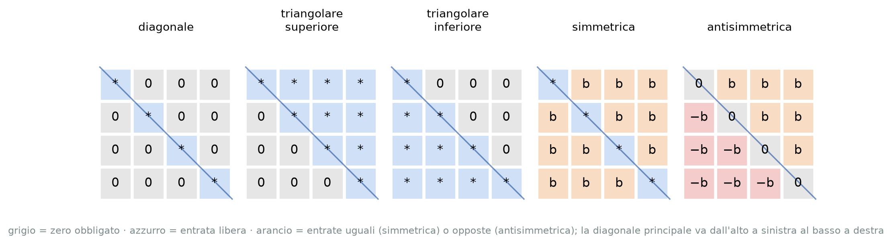
Come sono fatte le matrici diagonali, triangolari, simmetriche e antisimmetriche: in grigio le entrate nulle, in colore quelle libere o legate.
Un chiarimento sulla condizione «aij = 0 per i > j» delle triangolari: i > j significa che l'indice della riga è più grande di quello della colonna, cioè l'entrata sta sotto la diagonale. Per esempio a31 (terza riga, prima colonna) sta sotto. L'indice che conta la riga viene sempre per primo. Una matrice triangolare superiore include la diagonale: lì si possono avere numeri diversi da zero, e tutto ciò che sta sotto deve sparire.
Esempi
Le cinque matrici seguenti sono, nell'ordine, diagonale, triangolare superiore, triangolare inferiore, simmetrica e antisimmetrica (le righe sono separate da punto e virgola):
( 2 0 ; 0 −1 ) è diagonale;
( 1 √2 ; 0 9 ) ha zero sotto la diagonale: è triangolare superiore;
( −1 0 ; 7 2 ) ha zero sopra la diagonale: è triangolare inferiore;
( −1 2 ; 2 4 ) ha le entrate in posizione (1, 2) e (2, 1) uguali: è simmetrica;
( 0 1 ; −1 0 ) ha le entrate (1, 2) e (2, 1) opposte e zeri sulla diagonale: è antisimmetrica.
In dimensione 3: ( 1 2 3 ; 0 4 5 ; 0 0 6 ) è triangolare superiore, ( 1 0 0 ; 2 4 0 ; 3 5 6 ) è triangolare inferiore, ( 1 0 0 ; 0 2 0 ; 0 0 3 ) è diagonale (si scrive anche diag(1, 2, 3)), ( 1 2 3 ; 2 4 5 ; 3 5 6 ) è simmetrica e ( 0 1 2 ; −1 0 3 ; −2 −3 0 ) è antisimmetrica.
Una matrice può stare in più classi
Una stessa matrice può appartenere a più classi, e la matrice nulla appartiene a tutte e cinque. Per esempio ( 0 0 ; 0 1 ) è diagonale, triangolare superiore, triangolare inferiore e simmetrica.
Antisimmetriche e diagonale. In una matrice antisimmetrica gli elementi della diagonale sono necessariamente nulli. La condizione aij = −aji applicata agli indici uguali (i = j) dice aii = −aii: un numero che è uguale al proprio opposto può essere solo 0 (in ℝ o in ℂ, e più in generale in ogni campo in cui 1 + 1 ≠ 0: da a = −a segue 2a = 0). Geometricamente, lo specchio rispetto alla diagonale lascia ferme le entrate della diagonale, ma cambia loro il segno, quindi devono essere zero.
Simmetria e antisimmetria non si escludono. Nel caso dei numeri reali o complessi la matrice nulla è sia simmetrica sia antisimmetrica, ed è l'unica: se aij = aji e aij = −aji allora aij = −aij, quindi aij = 0.
Gli insiemi di queste matrici si indicano con D(n) (diagonali), Ts(n) (triangolari superiori), Ti(n) (triangolari inferiori), S(n) (simmetriche) e A(n) (antisimmetriche).
Sono tutti sottospazi
Proposizione. I sottoinsiemi D(n), Ts(n), Ti(n), S(n) e A(n) sono tutti sottospazi vettoriali di M(n).
In parole povere: se sommi due matrici dello stesso tipo, o ne moltiplichi una per un numero, il risultato resta dello stesso tipo. Due matrici diagonali sommate danno una diagonale; due simmetriche sommate danno una simmetrica; e così via.
Per ciascuno dei cinque insiemi basta verificare le tre condizioni dei sottospazi: la matrice nulla appartiene all'insieme, e somma e prodotto per scalare conservano la proprietà che lo definisce. Per esempio, per le simmetriche:
1. la matrice nulla è simmetrica (tutte le entrate sono 0, quindi aij = aji);
2. se A e B sono simmetriche, la somma ha entrate aij + bij = aji + bji, che sono le entrate in posizione (j, i) della somma: A + B è simmetrica (in simboli, scambiare righe e colonne di A + B lascia A + B invariata);
3. se A è simmetrica e λ ∈ 𝕂, la matrice λA ha entrate λ·aij = λ·aji: è ancora simmetrica.
Per le antisimmetriche e per le altre classi il ragionamento è analogo. Come sottolineato a lezione, le verifiche sono abbastanza intuitive e non serve scriverle tutte; per chi trova la teoria astratta troppo complicata è però utile rifarle in modo formale, per esempio controllando le antisimmetriche con la vera definizione.
Il capitolo successivo introduce l'altro modo di costruire sottospazi: invece di imporre condizioni si fanno entrare solo i vettori che servono, cioè lo Span.
22. Combinazioni Lineari e Sottospazio Generato (Span)
Due modi di costruire sottospazi
Finora i sottospazi si sono costruiti per esclusione: si impongono condizioni (un'entrata uguale a zero, tante entrate nulle, una simmetria) e ciò che non le rispetta viene scartato. Come sottolineato a lezione, è come far entrare tutti in un'aula e poi mandare fuori, uno per uno, chi non ha gli occhiali. L'altra strada è per inclusione: si parte con l'aula vuota e si fanno entrare solo quelli che servono, per esempio tutti quelli con gli occhiali. Questo secondo metodo si chiama sottospazio generato, o Span, e richiede prima la nozione di combinazione lineare.
Combinazioni lineari
Sia V uno spazio vettoriale su 𝕂 e siano v₁, …, vk ∈ V alcuni vettori.
Definizione. Una combinazione lineare di v₁, …, vk è un vettore della forma
v = λ₁v₁ + λ₂v₂ + … + λkvk,
con λ₁, …, λk ∈ 𝕂 scalari qualunque.
In parole povere: una combinazione lineare è una «ricetta» che usa i vettori che hai già: ne prendi un po' di ciascuno (ogni vettore moltiplicato per un numero, anche negativo o zero) e li sommi. Il risultato è un nuovo vettore dello stesso spazio, perché somma e moltiplicazione per scalare restano dentro lo spazio. Per esempio 3v₁ + 2v₂ − 7v₃ è una combinazione lineare di v₁, v₂, v₃.
Un esempio in ℝ³ con v₁ = (1, 0, 0) e v₂ = (0, 1, 0): la combinazione λ₁v₁ + λ₂v₂ vale (λ₁, 0, 0) + (0, λ₂, 0) = (λ₁, λ₂, 0). Al variare di λ₁ e λ₂ si ottengono tutti i vettori con ultima componente 0, cioè il piano z = 0.
Lo Span
Definizione. Il sottospazio generato da v₁, …, vk è l'insieme di tutte le loro combinazioni lineari:
Span(v₁, …, vk) = { λ₁v₁ + … + λkvk | λ₁, …, λk ∈ 𝕂 }.
Si legge «span» (dall'inglese to span, che in senso matematico vuol dire generare), ed è il nome che si usa anche in italiano per «lo spazio generato da».
In parole povere: lo Span di alcuni vettori è l'insieme di tutto ciò che riesci a costruire usando solo quei vettori, sommandoli e allungandoli o accorciandoli. Con un solo vettore non nullo ottieni la retta che passa per l'origine nella sua direzione; con due vettori non nulli e non paralleli, il piano per l'origine che li contiene; e così via.
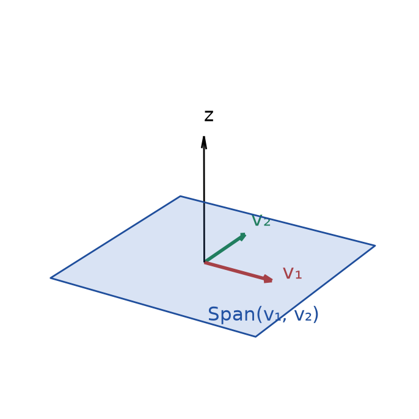
Span(v₁, v₂) in ℝ³ con v₁ = (1, 0, 0) e v₂ = (0, 1, 0): è il piano generato dai due vettori.
Con un singolo vettore, Span(v) = { λv | λ ∈ 𝕂 }. Per esempio in ℝ², Span((1, 2)) = { (t, 2t) | t ∈ ℝ }, la retta y = 2x.
Proposizione. Lo Span(v₁, …, vk) è un sottospazio vettoriale di V.
Dimostrazione. Sia W = Span(v₁, …, vk). Si verificano le tre condizioni.
1. 0 ∈ W. Basta prendere tutti gli scalari uguali a zero: 0·v₁ + … + 0·vk = 0. (Come prendere zero di tutto: il risultato è lo zero.)
2. Chiusura rispetto alla somma. Siano v = λ₁v₁ + … + λkvk e w = μ₁v₁ + … + μkvk due elementi di W. Usando la commutatività e l'associatività della somma si possono riordinare i termini, e usando la proprietà distributiva (λ + μ)v = λv + μv degli spazi vettoriali si ottiene v + w = (λ₁ + μ₁)v₁ + … + (λk + μk)vk, che è ancora una combinazione lineare di v₁, …, vk, quindi sta in W.
3. Chiusura rispetto al prodotto per scalare. Se v ∈ W e λ ∈ 𝕂, allora λv = (λλ₁)v₁ + … + (λλk)vk (si usa la distributività λ(u + w) = λu + λw e l'associatività del prodotto), che sta ancora in W.
Il significato di questo risultato è che lo Span è un modo per fabbricare sottospazi: qualunque insieme di vettori si scelga, lo spazio che generano è sempre un sottospazio.
Come sottolineato a lezione, il fatto che le dimostrazioni di questo capitolo valgano in uno spazio vettoriale qualunque, e non solo in ℝ³, è un punto di forza: lo stesso ragionamento funziona per matrici, polinomi, funzioni derivabili o integrabili, e per qualsiasi spazio che si voglia immaginare, perché quasi ogni oggetto che si studia in matematica ha la struttura di uno spazio vettoriale. Il prezzo è che la teoria sembra più astratta; il vantaggio è che si dimostra una cosa molto più generale. Nel corso gli esempi saranno quasi sempre vettori di ℝⁿ e matrici.
Esercizi
Esercizio 6.9. Sia W ⊆ M(2, ℝ) l'insieme delle matrici della forma ( a b ; b a ), con a, b ∈ ℝ. Si dimostra che W è un sottospazio di M(2, ℝ) e che W = Span( ( 1 0 ; 0 1 ), ( 0 1 ; 1 0 ) ).
La matrice nulla è di questa forma (a = b = 0).
La somma di ( a b ; b a ) e ( a′ b′ ; b′ a′ ) è ( a+a′ b+b′ ; b+b′ a+a′ ), ancora della stessa forma con parametri a + a′ e b + b′.
Il multiplo λ·( a b ; b a ) = ( λa λb ; λb λa ) è ancora della stessa forma.
Ogni matrice ( a b ; b a ) si scrive come a·( 1 0 ; 0 1 ) + b·( 0 1 ; 1 0 ), quindi sta nello Span; viceversa ogni combinazione lineare delle due matrici ha quella forma. Dunque W coincide con lo Span.
Esercizio 6.10. In ℝ³ siano v₁ = (1, 0, 1) e v₂ = (0, 1, 1). Si descrive Span(v₁, v₂) e si controlla quali tra u = (1, 2, 3) e w = (1, 2, 4) vi appartengono.
Una combinazione è a·v₁ + b·v₂ = (a, b, a + b). Quindi Span(v₁, v₂) = { (x, y, z) | z = x + y }: il piano di equazione z = x + y.
u = (1, 2, 3): 1 + 2 = 3, quindi z = x + y e u appartiene al piano (si ottiene con a = 1, b = 2).
w = (1, 2, 4): 1 + 2 = 3 ≠ 4, quindi w non appartiene al piano.
Il passo successivo è chiedersi quando alcuni vettori generano tutto lo spazio senza ridondanze: è il tema della dipendenza e indipendenza lineare.